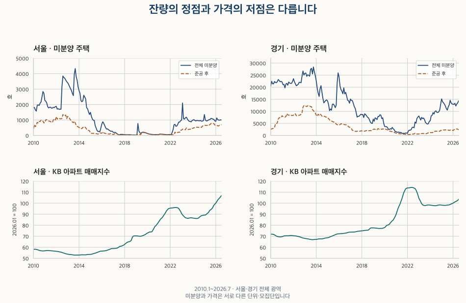
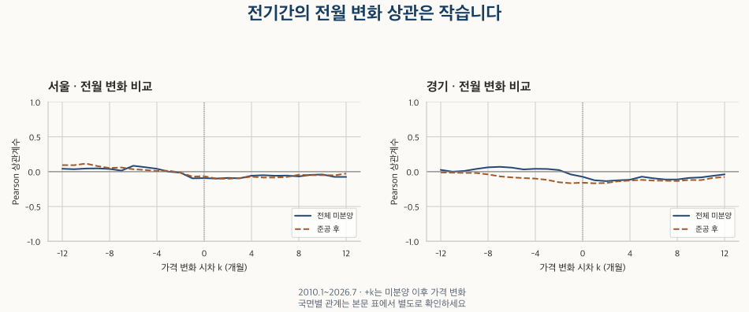

공급과 미분양 · 잔량과 가격의 시차
미분양이 늘면 집값은 언제 떨어질까? 서울·경기 시차 비교
서울·경기 2010~2026년 7월의 전체·준공 후 미분양과 집값·거래량을 비교합니다. 25개 시차, 국면별 반례와 정점·저점의 여러 대응을 확인하고 고정 하락 신호와 구분하세요.
분석 기간 · 2010.1~2026.7 · 과거 자료 비교 | 자료 기준일 · 2026-10-03
‘미분양이 늘었으니 몇 달 뒤 집값이 떨어진다’는 말은 서울과 경기에서 얼마나 일정했을까요? 2010년 1월~2026년 7월의 월말 미분양과 아파트 가격·거래량을 비교했습니다. 미분양 증가와 가격 변화 사이의 음의 관계가 뚜렷했던 시기는 있지만, 어느 지역에서나 통하는 고정 시차는 확인되지 않았습니다.
미분양과 집값은 같은 집을 추적한 숫자인가요?
이 글의 미분양은 국토교통부 미분양주택현황보고의 월말 주택 잔량입니다. 현재 공식 설명은 사업계획승인·건축허가를 받은 민간 주택을 대상으로 하며, 분양시행자에서 시군구·시도를 거쳐 국토부로 보고해 익월 말 공표하는 행정통계입니다. 전체 미분양에는 준공 전과 준공 후가 함께 들어갑니다. 준공 후는 그중 사용검사 뒤에도 남은 부분입니다.
원표에는 합계·공공부문·민간부문 열이 있습니다. 이번에 확인한 서울·경기 199개월에서는 공공부문 열이 모두 0이고 민간값과 총계가 같았습니다. 과거 일부 표의 공공부문은 국민주택기금 지원을 받은 민간업체를 뜻한다는 주석도 있습니다. 열 이름을 공공 소유와 민간 소유의 구분으로 곧바로 바꾸지 않습니다. 보고 과정과 빈칸의 의미는 미분양 통계의 포함 범위에서 자세히 설명합니다.
가격은 서울·경기 전체의 KB 아파트 매매 조사 가격지수입니다. 거래가격이나 비교 사례로 평가한 표본 주택의 가격을 조사하며, 개별 계약 평균과는 다릅니다. 미분양은 아파트 외 주택을 포함할 수 있으므로 같은 주택들의 판매와 가격을 연결한 자료가 아닙니다. 가격 종류가 헷갈린다면 관측 가격과 모형 가격의 차이부터 확인해 보세요.
시간 기준도 다릅니다. 미분양은 월말 잔량, KB 월간 가격은 15일을 포함한 주의 월요일 기준 조사입니다. 거래량은 주 비교에서 광역 전체의 신고월 아파트 매매 호수를 사용합니다. 어느 달의 관측값인지와 그 정보가 실제 발표된 날은 같지 않습니다. 이 글은 현재 보유한 과거 이력을 비교한 회고 분석이며 당시 발표본으로 투자 성과를 시험한 결과가 아닙니다.
전체 미분양과 준공 후 미분양의 정점은 같았나요?
전체 미분양의 분석 기간 최대는 서울 2013년 9월 4,331호, 경기 2013년 10월 28,399호였습니다. 준공 후만 보면 서울 2012년 8월 1,353호, 경기 2012년 12월 12,345호로 최대 시점이 달랐습니다. 전체 미분양을 보며 떠올린 시차를 준공 후 지표에 그대로 적용할 수 없는 이유입니다.

분석 마지막 달인 2026년 7월의 전체·준공 후 잔량은 서울 994호·692호, 경기 14,394호·2,331호입니다. 2026년 10월 17일 확인한 공식 목록에는 8월 자료도 있으므로, 이 7월 값을 현재의 최신 현황으로 읽지 않습니다. 분석 기간을 고정한 장기 비교입니다.
잔량이 줄어드는 이유에는 판매뿐 아니라 사업 취소나 집계 수정 등이 포함될 수 있습니다. 월말 잔량을 열두 번 더해 그해 새로 발생한 미분양이라고 부르지 않습니다. 또한 여기의 경기는 도 전체입니다. 면적별 준공 후 미분양 글의 수집 경기 합계와 범위가 다릅니다.
미분양이 늘어난 뒤 몇 달의 가격을 비교하나요?
+3개월은 미분양의 3월 변화와 가격의 6월 변화를 짝짓는 방식입니다. 0은 같은 달, −3개월은 가격 변화를 세 달 앞에 놓습니다. 미분양은 앞 달보다 늘거나 줄어든 호수, 가격은 로그 전월 변화로 비교했습니다. 로그 변화는 가격 비율의 자연로그이며, 여기서는 월별 가격 움직임을 비교하기 위한 기준입니다.
상관계수는 −1~+1입니다. 음수는 두 변화가 반대 방향으로 움직이는 경향, 양수는 같은 방향의 경향을 뜻합니다. Pearson은 값의 크기를, Spearman은 동률을 평균 순위로 처리한 순서의 관계를 봅니다. 로그 변화의 동률은 같은 비율인지 정확히 비교해 판정했습니다. 0에 가깝다는 사실만으로 모든 형태의 관계가 없다고 판단하지 않습니다.
| 지역 · 잔량 | 비교 시차(개월) | 월 쌍 | Pearson r | Spearman ρ |
|---|---|---|---|---|
| 서울 · 전체 미분양 | +0 | 198 | -0.093 | -0.034 |
| 서울 · 전체 미분양 | +3 | 195 | -0.096 | -0.027 |
| 서울 · 전체 미분양 | +6 | 192 | -0.059 | -0.015 |
| 서울 · 전체 미분양 | +12 | 186 | -0.076 | -0.105 |
| 서울 · 준공 후 | +0 | 198 | -0.065 | 0.018 |
| 서울 · 준공 후 | +3 | 195 | -0.092 | -0.016 |
| 서울 · 준공 후 | +6 | 192 | -0.084 | -0.023 |
| 서울 · 준공 후 | +12 | 186 | -0.027 | -0.016 |
| 경기 · 전체 미분양 | +0 | 198 | -0.073 | -0.170 |
| 경기 · 전체 미분양 | +3 | 195 | -0.124 | -0.188 |
| 경기 · 전체 미분양 | +6 | 192 | -0.096 | -0.123 |
| 경기 · 전체 미분양 | +12 | 186 | -0.039 | -0.094 |
| 경기 · 준공 후 | +0 | 198 | -0.158 | -0.332 |
| 경기 · 준공 후 | +3 | 195 | -0.138 | -0.336 |
| 경기 · 준공 후 | +6 | 192 | -0.128 | -0.285 |
| 경기 · 준공 후 | +12 | 186 | -0.076 | -0.177 |
전체 기간의 주요 시차에서는 작은 음의 Pearson 계수가 나옵니다. 경기 준공 후는 같은 달 −0.158, 3개월 뒤 −0.138이며, 같은 달의 순위 상관은 −0.332입니다. 통계의 종류와 잔량의 범위를 명시해야 같은 숫자를 비교할 수 있습니다.

서울 · 전체 미분양 · 전체 25시차 펼치기
| 지역 · 잔량 | 비교 시차(개월) | 월 쌍 | Pearson r | Spearman ρ |
|---|---|---|---|---|
| 서울 · 전체 미분양 | -12 | 186 | 0.042 | 0.233 |
| 서울 · 전체 미분양 | -11 | 187 | 0.035 | 0.268 |
| 서울 · 전체 미분양 | -10 | 188 | 0.045 | 0.270 |
| 서울 · 전체 미분양 | -9 | 189 | 0.047 | 0.232 |
| 서울 · 전체 미분양 | -8 | 190 | 0.039 | 0.217 |
| 서울 · 전체 미분양 | -7 | 191 | 0.015 | 0.198 |
| 서울 · 전체 미분양 | -6 | 192 | 0.084 | 0.155 |
| 서울 · 전체 미분양 | -5 | 193 | 0.064 | 0.168 |
| 서울 · 전체 미분양 | -4 | 194 | 0.041 | 0.179 |
| 서울 · 전체 미분양 | -3 | 195 | 0.000 | 0.151 |
| 서울 · 전체 미분양 | -2 | 196 | -0.015 | 0.072 |
| 서울 · 전체 미분양 | -1 | 197 | -0.096 | 0.018 |
| 서울 · 전체 미분양 | +0 | 198 | -0.093 | -0.034 |
| 서울 · 전체 미분양 | +1 | 197 | -0.099 | -0.055 |
| 서울 · 전체 미분양 | +2 | 196 | -0.090 | -0.052 |
| 서울 · 전체 미분양 | +3 | 195 | -0.096 | -0.027 |
| 서울 · 전체 미분양 | +4 | 194 | -0.058 | 0.007 |
| 서울 · 전체 미분양 | +5 | 193 | -0.051 | 0.003 |
| 서울 · 전체 미분양 | +6 | 192 | -0.059 | -0.015 |
| 서울 · 전체 미분양 | +7 | 191 | -0.056 | -0.016 |
| 서울 · 전체 미분양 | +8 | 190 | -0.068 | -0.030 |
| 서울 · 전체 미분양 | +9 | 189 | -0.046 | -0.041 |
| 서울 · 전체 미분양 | +10 | 188 | -0.041 | -0.044 |
| 서울 · 전체 미분양 | +11 | 187 | -0.074 | -0.079 |
| 서울 · 전체 미분양 | +12 | 186 | -0.076 | -0.105 |
서울 · 준공 후 · 전체 25시차 펼치기
| 지역 · 잔량 | 비교 시차(개월) | 월 쌍 | Pearson r | Spearman ρ |
|---|---|---|---|---|
| 서울 · 준공 후 | -12 | 186 | 0.094 | 0.218 |
| 서울 · 준공 후 | -11 | 187 | 0.093 | 0.214 |
| 서울 · 준공 후 | -10 | 188 | 0.116 | 0.181 |
| 서울 · 준공 후 | -9 | 189 | 0.079 | 0.165 |
| 서울 · 준공 후 | -8 | 190 | 0.052 | 0.175 |
| 서울 · 준공 후 | -7 | 191 | 0.060 | 0.190 |
| 서울 · 준공 후 | -6 | 192 | 0.035 | 0.158 |
| 서울 · 준공 후 | -5 | 193 | 0.024 | 0.151 |
| 서울 · 준공 후 | -4 | 194 | 0.009 | 0.130 |
| 서울 · 준공 후 | -3 | 195 | 0.014 | 0.120 |
| 서울 · 준공 후 | -2 | 196 | -0.014 | 0.081 |
| 서울 · 준공 후 | -1 | 197 | -0.070 | 0.042 |
| 서울 · 준공 후 | +0 | 198 | -0.065 | 0.018 |
| 서울 · 준공 후 | +1 | 197 | -0.099 | -0.010 |
| 서울 · 준공 후 | +2 | 196 | -0.102 | -0.034 |
| 서울 · 준공 후 | +3 | 195 | -0.092 | -0.016 |
| 서울 · 준공 후 | +4 | 194 | -0.073 | -0.005 |
| 서울 · 준공 후 | +5 | 193 | -0.084 | -0.008 |
| 서울 · 준공 후 | +6 | 192 | -0.084 | -0.023 |
| 서울 · 준공 후 | +7 | 191 | -0.076 | -0.002 |
| 서울 · 준공 후 | +8 | 190 | -0.045 | 0.033 |
| 서울 · 준공 후 | +9 | 189 | -0.051 | 0.038 |
| 서울 · 준공 후 | +10 | 188 | -0.050 | 0.025 |
| 서울 · 준공 후 | +11 | 187 | -0.053 | 0.009 |
| 서울 · 준공 후 | +12 | 186 | -0.027 | -0.016 |
경기 · 전체 미분양 · 전체 25시차 펼치기
| 지역 · 잔량 | 비교 시차(개월) | 월 쌍 | Pearson r | Spearman ρ |
|---|---|---|---|---|
| 경기 · 전체 미분양 | -12 | 186 | 0.025 | 0.038 |
| 경기 · 전체 미분양 | -11 | 187 | -0.000 | -0.002 |
| 경기 · 전체 미분양 | -10 | 188 | 0.011 | 0.002 |
| 경기 · 전체 미분양 | -9 | 189 | 0.039 | 0.025 |
| 경기 · 전체 미분양 | -8 | 190 | 0.062 | 0.064 |
| 경기 · 전체 미분양 | -7 | 191 | 0.069 | 0.052 |
| 경기 · 전체 미분양 | -6 | 192 | 0.058 | 0.011 |
| 경기 · 전체 미분양 | -5 | 193 | 0.032 | -0.007 |
| 경기 · 전체 미분양 | -4 | 194 | 0.041 | 0.027 |
| 경기 · 전체 미분양 | -3 | 195 | 0.038 | 0.061 |
| 경기 · 전체 미분양 | -2 | 196 | 0.023 | 0.026 |
| 경기 · 전체 미분양 | -1 | 197 | -0.040 | -0.071 |
| 경기 · 전체 미분양 | +0 | 198 | -0.073 | -0.170 |
| 경기 · 전체 미분양 | +1 | 197 | -0.124 | -0.235 |
| 경기 · 전체 미분양 | +2 | 196 | -0.136 | -0.219 |
| 경기 · 전체 미분양 | +3 | 195 | -0.124 | -0.188 |
| 경기 · 전체 미분양 | +4 | 194 | -0.115 | -0.145 |
| 경기 · 전체 미분양 | +5 | 193 | -0.072 | -0.102 |
| 경기 · 전체 미분양 | +6 | 192 | -0.096 | -0.123 |
| 경기 · 전체 미분양 | +7 | 191 | -0.112 | -0.167 |
| 경기 · 전체 미분양 | +8 | 190 | -0.112 | -0.172 |
| 경기 · 전체 미분양 | +9 | 189 | -0.090 | -0.134 |
| 경기 · 전체 미분양 | +10 | 188 | -0.082 | -0.124 |
| 경기 · 전체 미분양 | +11 | 187 | -0.060 | -0.104 |
| 경기 · 전체 미분양 | +12 | 186 | -0.039 | -0.094 |
경기 · 준공 후 · 전체 25시차 펼치기
| 지역 · 잔량 | 비교 시차(개월) | 월 쌍 | Pearson r | Spearman ρ |
|---|---|---|---|---|
| 경기 · 준공 후 | -12 | 186 | -0.011 | -0.015 |
| 경기 · 준공 후 | -11 | 187 | -0.015 | -0.008 |
| 경기 · 준공 후 | -10 | 188 | -0.017 | -0.008 |
| 경기 · 준공 후 | -9 | 189 | -0.019 | -0.056 |
| 경기 · 준공 후 | -8 | 190 | -0.040 | -0.106 |
| 경기 · 준공 후 | -7 | 191 | -0.068 | -0.154 |
| 경기 · 준공 후 | -6 | 192 | -0.082 | -0.203 |
| 경기 · 준공 후 | -5 | 193 | -0.092 | -0.185 |
| 경기 · 준공 후 | -4 | 194 | -0.099 | -0.210 |
| 경기 · 준공 후 | -3 | 195 | -0.118 | -0.220 |
| 경기 · 준공 후 | -2 | 196 | -0.152 | -0.266 |
| 경기 · 준공 후 | -1 | 197 | -0.166 | -0.286 |
| 경기 · 준공 후 | +0 | 198 | -0.158 | -0.332 |
| 경기 · 준공 후 | +1 | 197 | -0.167 | -0.368 |
| 경기 · 준공 후 | +2 | 196 | -0.162 | -0.375 |
| 경기 · 준공 후 | +3 | 195 | -0.138 | -0.336 |
| 경기 · 준공 후 | +4 | 194 | -0.128 | -0.278 |
| 경기 · 준공 후 | +5 | 193 | -0.118 | -0.288 |
| 경기 · 준공 후 | +6 | 192 | -0.128 | -0.285 |
| 경기 · 준공 후 | +7 | 191 | -0.130 | -0.272 |
| 경기 · 준공 후 | +8 | 190 | -0.134 | -0.268 |
| 경기 · 준공 후 | +9 | 189 | -0.119 | -0.246 |
| 경기 · 준공 후 | +10 | 188 | -0.121 | -0.231 |
| 경기 · 준공 후 | +11 | 187 | -0.091 | -0.199 |
| 경기 · 준공 후 | +12 | 186 | -0.076 | -0.177 |
어떤 조건에서는 하락과 관계가 더 뚜렷했나요?
미분양이 수급 불균형을 드러내 가격 하방 압력과 관련될 수 있다는 반론은 타당한 검토 대상입니다. 서울 전체 미분양의 2010~2014년 같은 달 계수는 −0.435입니다. 2020~2022년에는 서울 전체의 6개월 뒤 비교가 −0.601, 경기 준공 후의 3개월 뒤 비교가 −0.611이었습니다. 이런 시기의 음의 관계를 전체 기간 평균 뒤에 숨기지 않습니다.
반대 방향도 있습니다. 경기 전체 미분양의 2015~2019년 12개월 뒤 비교는 +0.212입니다. 기간을 자르면 짝지을 수 있는 달도 줄어듭니다. 2020~2022년의 12개월 시차는 23개월 쌍만 남아, 미리 정한 최소 24개월에 못 미치므로 비교 불가로 표시했습니다. 겹치는 기간과 시차는 독립적인 실험들이 아닙니다.
2010~2014 · 미분양 호수 차이와 KB 가격 변화 펼치기
| 지역 · 잔량 | 비교 시차(개월) | 월 쌍 | Pearson r | Spearman ρ |
|---|---|---|---|---|
| 서울 · 전체 미분양 | +0 | 59 | -0.435 | -0.494 |
| 서울 · 전체 미분양 | +3 | 56 | -0.173 | -0.193 |
| 서울 · 전체 미분양 | +6 | 53 | -0.045 | -0.106 |
| 서울 · 전체 미분양 | +12 | 47 | -0.131 | -0.308 |
| 서울 · 준공 후 | +0 | 59 | -0.095 | -0.203 |
| 서울 · 준공 후 | +3 | 56 | -0.196 | -0.182 |
| 서울 · 준공 후 | +6 | 53 | -0.236 | -0.183 |
| 서울 · 준공 후 | +12 | 47 | -0.184 | -0.237 |
| 경기 · 전체 미분양 | +0 | 59 | -0.252 | -0.274 |
| 경기 · 전체 미분양 | +3 | 56 | -0.169 | -0.212 |
| 경기 · 전체 미분양 | +6 | 53 | -0.094 | -0.075 |
| 경기 · 전체 미분양 | +12 | 47 | 0.052 | 0.035 |
| 경기 · 준공 후 | +0 | 59 | -0.328 | -0.344 |
| 경기 · 준공 후 | +3 | 56 | -0.184 | -0.284 |
| 경기 · 준공 후 | +6 | 53 | -0.002 | -0.113 |
| 경기 · 준공 후 | +12 | 47 | 0.013 | 0.031 |
2015~2019 · 미분양 호수 차이와 KB 가격 변화 펼치기
| 지역 · 잔량 | 비교 시차(개월) | 월 쌍 | Pearson r | Spearman ρ |
|---|---|---|---|---|
| 서울 · 전체 미분양 | +0 | 59 | -0.026 | -0.035 |
| 서울 · 전체 미분양 | +3 | 56 | -0.117 | -0.104 |
| 서울 · 전체 미분양 | +6 | 53 | 0.017 | -0.036 |
| 서울 · 전체 미분양 | +12 | 47 | 0.039 | -0.036 |
| 서울 · 준공 후 | +0 | 59 | -0.056 | -0.037 |
| 서울 · 준공 후 | +3 | 56 | -0.022 | -0.058 |
| 서울 · 준공 후 | +6 | 53 | -0.055 | -0.114 |
| 서울 · 준공 후 | +12 | 47 | 0.034 | -0.034 |
| 경기 · 전체 미분양 | +0 | 59 | -0.003 | -0.131 |
| 경기 · 전체 미분양 | +3 | 56 | -0.113 | -0.143 |
| 경기 · 전체 미분양 | +6 | 53 | -0.035 | -0.030 |
| 경기 · 전체 미분양 | +12 | 47 | 0.212 | 0.218 |
| 경기 · 준공 후 | +0 | 59 | -0.245 | -0.343 |
| 경기 · 준공 후 | +3 | 56 | -0.120 | -0.206 |
| 경기 · 준공 후 | +6 | 53 | -0.143 | -0.235 |
| 경기 · 준공 후 | +12 | 47 | -0.027 | -0.273 |
2020~2022 · 미분양 호수 차이와 KB 가격 변화 펼치기
| 지역 · 잔량 | 비교 시차(개월) | 월 쌍 | Pearson r | Spearman ρ |
|---|---|---|---|---|
| 서울 · 전체 미분양 | +0 | 35 | -0.318 | -0.232 |
| 서울 · 전체 미분양 | +3 | 32 | -0.287 | -0.458 |
| 서울 · 전체 미분양 | +6 | 29 | -0.601 | -0.571 |
| 서울 · 전체 미분양 | +12 | 23 | 비교 불가 | 비교 불가 |
| 서울 · 준공 후 | +0 | 35 | -0.295 | -0.114 |
| 서울 · 준공 후 | +3 | 32 | -0.168 | -0.259 |
| 서울 · 준공 후 | +6 | 29 | -0.431 | -0.341 |
| 서울 · 준공 후 | +12 | 23 | 비교 불가 | 비교 불가 |
| 경기 · 전체 미분양 | +0 | 35 | -0.413 | -0.274 |
| 경기 · 전체 미분양 | +3 | 32 | -0.548 | -0.482 |
| 경기 · 전체 미분양 | +6 | 29 | -0.429 | -0.406 |
| 경기 · 전체 미분양 | +12 | 23 | 비교 불가 | 비교 불가 |
| 경기 · 준공 후 | +0 | 35 | -0.202 | -0.427 |
| 경기 · 준공 후 | +3 | 32 | -0.611 | -0.640 |
| 경기 · 준공 후 | +6 | 29 | -0.584 | -0.648 |
| 경기 · 준공 후 | +12 | 23 | 비교 불가 | 비교 불가 |
2023~2026.7 · 미분양 호수 차이와 KB 가격 변화 펼치기
| 지역 · 잔량 | 비교 시차(개월) | 월 쌍 | Pearson r | Spearman ρ |
|---|---|---|---|---|
| 서울 · 전체 미분양 | +0 | 42 | -0.027 | -0.060 |
| 서울 · 전체 미분양 | +3 | 39 | -0.099 | -0.047 |
| 서울 · 전체 미분양 | +6 | 36 | 0.005 | 0.164 |
| 서울 · 전체 미분양 | +12 | 30 | -0.085 | -0.269 |
| 서울 · 준공 후 | +0 | 42 | -0.174 | -0.091 |
| 서울 · 준공 후 | +3 | 39 | -0.162 | -0.055 |
| 서울 · 준공 후 | +6 | 36 | 0.014 | 0.069 |
| 서울 · 준공 후 | +12 | 30 | -0.115 | -0.099 |
| 경기 · 전체 미분양 | +0 | 42 | 0.074 | -0.017 |
| 경기 · 전체 미분양 | +3 | 39 | -0.059 | -0.143 |
| 경기 · 전체 미분양 | +6 | 36 | 0.079 | 0.068 |
| 경기 · 전체 미분양 | +12 | 30 | -0.188 | -0.228 |
| 경기 · 준공 후 | +0 | 42 | -0.077 | -0.052 |
| 경기 · 준공 후 | +3 | 39 | -0.090 | -0.130 |
| 경기 · 준공 후 | +6 | 36 | -0.351 | -0.200 |
| 경기 · 준공 후 | +12 | 30 | -0.031 | -0.049 |
2010~2025 · 미분양 호수 차이와 KB 가격 변화 펼치기
| 지역 · 잔량 | 비교 시차(개월) | 월 쌍 | Pearson r | Spearman ρ |
|---|---|---|---|---|
| 서울 · 전체 미분양 | +0 | 191 | -0.098 | -0.047 |
| 서울 · 전체 미분양 | +3 | 188 | -0.094 | -0.022 |
| 서울 · 전체 미분양 | +6 | 185 | -0.059 | -0.021 |
| 서울 · 전체 미분양 | +12 | 179 | -0.074 | -0.129 |
| 서울 · 준공 후 | +0 | 191 | -0.066 | 0.013 |
| 서울 · 준공 후 | +3 | 188 | -0.075 | 0.002 |
| 서울 · 준공 후 | +6 | 185 | -0.087 | -0.034 |
| 서울 · 준공 후 | +12 | 179 | -0.032 | -0.039 |
| 경기 · 전체 미분양 | +0 | 191 | -0.079 | -0.198 |
| 경기 · 전체 미분양 | +3 | 188 | -0.122 | -0.194 |
| 경기 · 전체 미분양 | +6 | 185 | -0.101 | -0.143 |
| 경기 · 전체 미분양 | +12 | 179 | -0.033 | -0.072 |
| 경기 · 준공 후 | +0 | 191 | -0.160 | -0.353 |
| 경기 · 준공 후 | +3 | 188 | -0.142 | -0.373 |
| 경기 · 준공 후 | +6 | 185 | -0.126 | -0.295 |
| 경기 · 준공 후 | +12 | 179 | -0.078 | -0.208 |
2011.1~2026.6 · 미분양 호수 차이와 KB 가격 변화 펼치기
| 지역 · 잔량 | 비교 시차(개월) | 월 쌍 | Pearson r | Spearman ρ |
|---|---|---|---|---|
| 서울 · 전체 미분양 | +0 | 185 | -0.079 | 0.012 |
| 서울 · 전체 미분양 | +3 | 182 | -0.097 | -0.016 |
| 서울 · 전체 미분양 | +6 | 179 | -0.059 | -0.012 |
| 서울 · 전체 미분양 | +12 | 173 | -0.071 | -0.091 |
| 서울 · 준공 후 | +0 | 185 | -0.051 | 0.027 |
| 서울 · 준공 후 | +3 | 182 | -0.061 | 0.016 |
| 서울 · 준공 후 | +6 | 179 | -0.064 | -0.008 |
| 서울 · 준공 후 | +12 | 173 | -0.023 | -0.021 |
| 경기 · 전체 미분양 | +0 | 185 | -0.074 | -0.171 |
| 경기 · 전체 미분양 | +3 | 182 | -0.118 | -0.173 |
| 경기 · 전체 미분양 | +6 | 179 | -0.092 | -0.127 |
| 경기 · 전체 미분양 | +12 | 173 | -0.038 | -0.094 |
| 경기 · 준공 후 | +0 | 185 | -0.112 | -0.283 |
| 경기 · 준공 후 | +3 | 182 | -0.126 | -0.324 |
| 경기 · 준공 후 | +6 | 179 | -0.141 | -0.286 |
| 경기 · 준공 후 | +12 | 173 | -0.072 | -0.192 |
‘미분양이 많은 달인가’와 ‘이번 달에 얼마나 늘었는가’도 다른 질문입니다. 잔량 수준과 같은 달 가격 변화의 전체기간 계수는 서울 −0.494, 경기 −0.372입니다. 전월 호수 차이보다 관계가 크게 나타납니다. 오랫동안 미분양이 많고 가격이 부진했던 국면, 지표의 지속성이 함께 반영될 수 있습니다. 전월 변화로 바꿨다고 공통 원인이나 역방향 영향을 모두 제거한 것도 아닙니다.
수준·전월·전년 변화 비교 펼치기
| 변환 | 지역 · 잔량 | 비교 시차(개월) | 월 쌍 | Pearson r | Spearman ρ |
|---|---|---|---|---|---|
| 전월 호수 차이 | 서울 · 전체 미분양 | +0 | 198 | -0.093 | -0.034 |
| 전월 호수 차이 | 서울 · 전체 미분양 | +3 | 195 | -0.096 | -0.027 |
| 전월 호수 차이 | 서울 · 전체 미분양 | +6 | 192 | -0.059 | -0.015 |
| 전월 호수 차이 | 서울 · 전체 미분양 | +12 | 186 | -0.076 | -0.105 |
| 월말 잔량 수준 | 서울 · 전체 미분양 | +0 | 198 | -0.494 | -0.614 |
| 월말 잔량 수준 | 서울 · 전체 미분양 | +3 | 196 | -0.428 | -0.510 |
| 월말 잔량 수준 | 서울 · 전체 미분양 | +6 | 193 | -0.374 | -0.431 |
| 월말 잔량 수준 | 서울 · 전체 미분양 | +12 | 187 | -0.284 | -0.322 |
| log(1+잔량) 전월 차이 | 서울 · 전체 미분양 | +0 | 198 | -0.128 | -0.231 |
| log(1+잔량) 전월 차이 | 서울 · 전체 미분양 | +3 | 195 | -0.141 | -0.226 |
| log(1+잔량) 전월 차이 | 서울 · 전체 미분양 | +6 | 192 | -0.093 | -0.183 |
| log(1+잔량) 전월 차이 | 서울 · 전체 미분양 | +12 | 186 | -0.064 | -0.233 |
| 전년동월 호수 차이 | 서울 · 전체 미분양 | +0 | 187 | -0.176 | -0.129 |
| 전년동월 호수 차이 | 서울 · 전체 미분양 | +3 | 184 | -0.263 | -0.225 |
| 전년동월 호수 차이 | 서울 · 전체 미분양 | +6 | 181 | -0.313 | -0.286 |
| 전년동월 호수 차이 | 서울 · 전체 미분양 | +12 | 175 | -0.275 | -0.263 |
| 전월 호수 차이 | 서울 · 준공 후 | +0 | 198 | -0.065 | 0.018 |
| 전월 호수 차이 | 서울 · 준공 후 | +3 | 195 | -0.092 | -0.016 |
| 전월 호수 차이 | 서울 · 준공 후 | +6 | 192 | -0.084 | -0.023 |
| 전월 호수 차이 | 서울 · 준공 후 | +12 | 186 | -0.027 | -0.016 |
| 월말 잔량 수준 | 서울 · 준공 후 | +0 | 198 | -0.395 | -0.512 |
| 월말 잔량 수준 | 서울 · 준공 후 | +3 | 196 | -0.353 | -0.450 |
| 월말 잔량 수준 | 서울 · 준공 후 | +6 | 193 | -0.315 | -0.391 |
| 월말 잔량 수준 | 서울 · 준공 후 | +12 | 187 | -0.261 | -0.276 |
| log(1+잔량) 전월 차이 | 서울 · 준공 후 | +0 | 198 | -0.091 | -0.140 |
| log(1+잔량) 전월 차이 | 서울 · 준공 후 | +3 | 195 | -0.126 | -0.167 |
| log(1+잔량) 전월 차이 | 서울 · 준공 후 | +6 | 192 | -0.144 | -0.138 |
| log(1+잔량) 전월 차이 | 서울 · 준공 후 | +12 | 186 | -0.001 | -0.104 |
| 전년동월 호수 차이 | 서울 · 준공 후 | +0 | 187 | -0.114 | -0.235 |
| 전년동월 호수 차이 | 서울 · 준공 후 | +3 | 184 | -0.172 | -0.289 |
| 전년동월 호수 차이 | 서울 · 준공 후 | +6 | 181 | -0.181 | -0.275 |
| 전년동월 호수 차이 | 서울 · 준공 후 | +12 | 175 | -0.142 | -0.215 |
| 전월 호수 차이 | 경기 · 전체 미분양 | +0 | 198 | -0.073 | -0.170 |
| 전월 호수 차이 | 경기 · 전체 미분양 | +3 | 195 | -0.124 | -0.188 |
| 전월 호수 차이 | 경기 · 전체 미분양 | +6 | 192 | -0.096 | -0.123 |
| 전월 호수 차이 | 경기 · 전체 미분양 | +12 | 186 | -0.039 | -0.094 |
| 월말 잔량 수준 | 경기 · 전체 미분양 | +0 | 198 | -0.372 | -0.401 |
| 월말 잔량 수준 | 경기 · 전체 미분양 | +3 | 196 | -0.309 | -0.296 |
| 월말 잔량 수준 | 경기 · 전체 미분양 | +6 | 193 | -0.241 | -0.204 |
| 월말 잔량 수준 | 경기 · 전체 미분양 | +12 | 187 | -0.124 | -0.072 |
| log(1+잔량) 전월 차이 | 경기 · 전체 미분양 | +0 | 198 | -0.176 | -0.237 |
| log(1+잔량) 전월 차이 | 경기 · 전체 미분양 | +3 | 195 | -0.295 | -0.263 |
| log(1+잔량) 전월 차이 | 경기 · 전체 미분양 | +6 | 192 | -0.265 | -0.182 |
| log(1+잔량) 전월 차이 | 경기 · 전체 미분양 | +12 | 186 | -0.156 | -0.138 |
| 전년동월 호수 차이 | 경기 · 전체 미분양 | +0 | 187 | -0.186 | -0.322 |
| 전년동월 호수 차이 | 경기 · 전체 미분양 | +3 | 184 | -0.297 | -0.457 |
| 전년동월 호수 차이 | 경기 · 전체 미분양 | +6 | 181 | -0.357 | -0.503 |
| 전년동월 호수 차이 | 경기 · 전체 미분양 | +12 | 175 | -0.336 | -0.473 |
| 전월 호수 차이 | 경기 · 준공 후 | +0 | 198 | -0.158 | -0.332 |
| 전월 호수 차이 | 경기 · 준공 후 | +3 | 195 | -0.138 | -0.336 |
| 전월 호수 차이 | 경기 · 준공 후 | +6 | 192 | -0.128 | -0.285 |
| 전월 호수 차이 | 경기 · 준공 후 | +12 | 186 | -0.076 | -0.177 |
| 월말 잔량 수준 | 경기 · 준공 후 | +0 | 198 | -0.197 | -0.220 |
| 월말 잔량 수준 | 경기 · 준공 후 | +3 | 196 | -0.146 | -0.125 |
| 월말 잔량 수준 | 경기 · 준공 후 | +6 | 193 | -0.114 | -0.043 |
| 월말 잔량 수준 | 경기 · 준공 후 | +12 | 187 | -0.049 | 0.088 |
| log(1+잔량) 전월 차이 | 경기 · 준공 후 | +0 | 198 | -0.297 | -0.409 |
| log(1+잔량) 전월 차이 | 경기 · 준공 후 | +3 | 195 | -0.282 | -0.414 |
| log(1+잔량) 전월 차이 | 경기 · 준공 후 | +6 | 192 | -0.327 | -0.349 |
| log(1+잔량) 전월 차이 | 경기 · 준공 후 | +12 | 186 | -0.095 | -0.170 |
| 전년동월 호수 차이 | 경기 · 준공 후 | +0 | 187 | -0.301 | -0.513 |
| 전년동월 호수 차이 | 경기 · 준공 후 | +3 | 184 | -0.311 | -0.540 |
| 전년동월 호수 차이 | 경기 · 준공 후 | +6 | 181 | -0.300 | -0.527 |
| 전년동월 호수 차이 | 경기 · 준공 후 | +12 | 175 | -0.235 | -0.444 |
거래량을 비교하면 또 다릅니다. 전체 기간 같은 달의 전체 미분양 증감과 공식 신고량 변화의 상관은 서울 −0.005, 경기 −0.185입니다. 준공 후만 보면 각각 −0.225·+0.036입니다. 거래량 변화는 0호인 달도 다룰 수 있도록 log(1+호수)의 차이를 썼습니다. 계절성과 신고 시계가 함께 작용하므로 계수를 잔량 소진 속도로 바꾸지 않습니다.
아래에서는 모형 가격이 있는 2011년 1월~2026년 6월로 기간을 맞춰 가격과 거래량 기준을 나란히 비교합니다. 모형은 이미 공개한 0.1단위 값, 수집 계약량은 100건 단위입니다. 수집 계약량의 기본 집계는 해제·직거래를 포함하며 경기 일부 지역을 대상으로 합니다. 광역 신고량과 차이가 나도 그 차이를 모두 신고 지연 탓으로 돌릴 수 없습니다. KB·국토부 거래량의 기준 차이를 함께 확인하세요.
같은 기간의 가격·거래량 기준 비교 펼치기
| 비교 기준 | 지역 · 잔량 | 비교 시차(개월) | 월 쌍 | Pearson r | Spearman ρ |
|---|---|---|---|---|---|
| KB 가격 | 서울 · 전체 미분양 | +0 | 185 | -0.079 | 0.012 |
| KB 가격 | 서울 · 전체 미분양 | +3 | 182 | -0.097 | -0.016 |
| KB 가격 | 서울 · 전체 미분양 | +6 | 179 | -0.059 | -0.012 |
| KB 가격 | 서울 · 전체 미분양 | +12 | 173 | -0.071 | -0.091 |
| 공개 모형 가격 | 서울 · 전체 미분양 | +0 | 185 | -0.124 | -0.087 |
| 공개 모형 가격 | 서울 · 전체 미분양 | +3 | 182 | -0.094 | -0.084 |
| 공개 모형 가격 | 서울 · 전체 미분양 | +6 | 179 | -0.039 | -0.031 |
| 공개 모형 가격 | 서울 · 전체 미분양 | +12 | 173 | -0.084 | -0.140 |
| 신고월 거래량 | 서울 · 전체 미분양 | +0 | 185 | -0.021 | -0.174 |
| 신고월 거래량 | 서울 · 전체 미분양 | +3 | 182 | 0.081 | 0.075 |
| 신고월 거래량 | 서울 · 전체 미분양 | +6 | 179 | -0.102 | -0.029 |
| 신고월 거래량 | 서울 · 전체 미분양 | +12 | 173 | -0.137 | -0.028 |
| 수집 범위 계약월 거래량 | 서울 · 전체 미분양 | +0 | 185 | 0.052 | -0.029 |
| 수집 범위 계약월 거래량 | 서울 · 전체 미분양 | +3 | 182 | 0.003 | 0.028 |
| 수집 범위 계약월 거래량 | 서울 · 전체 미분양 | +6 | 179 | -0.018 | -0.058 |
| 수집 범위 계약월 거래량 | 서울 · 전체 미분양 | +12 | 173 | -0.062 | -0.033 |
| KB 가격 | 서울 · 준공 후 | +0 | 185 | -0.051 | 0.027 |
| KB 가격 | 서울 · 준공 후 | +3 | 182 | -0.061 | 0.016 |
| KB 가격 | 서울 · 준공 후 | +6 | 179 | -0.064 | -0.008 |
| KB 가격 | 서울 · 준공 후 | +12 | 173 | -0.023 | -0.021 |
| 공개 모형 가격 | 서울 · 준공 후 | +0 | 185 | -0.090 | -0.053 |
| 공개 모형 가격 | 서울 · 준공 후 | +3 | 182 | -0.089 | -0.044 |
| 공개 모형 가격 | 서울 · 준공 후 | +6 | 179 | -0.068 | -0.020 |
| 공개 모형 가격 | 서울 · 준공 후 | +12 | 173 | -0.017 | -0.028 |
| 신고월 거래량 | 서울 · 준공 후 | +0 | 185 | -0.236 | -0.134 |
| 신고월 거래량 | 서울 · 준공 후 | +3 | 182 | -0.027 | 0.049 |
| 신고월 거래량 | 서울 · 준공 후 | +6 | 179 | -0.062 | -0.047 |
| 신고월 거래량 | 서울 · 준공 후 | +12 | 173 | -0.075 | -0.011 |
| 수집 범위 계약월 거래량 | 서울 · 준공 후 | +0 | 185 | -0.080 | -0.084 |
| 수집 범위 계약월 거래량 | 서울 · 준공 후 | +3 | 182 | -0.033 | 0.021 |
| 수집 범위 계약월 거래량 | 서울 · 준공 후 | +6 | 179 | -0.005 | 0.052 |
| 수집 범위 계약월 거래량 | 서울 · 준공 후 | +12 | 173 | 0.052 | 0.039 |
| KB 가격 | 경기 · 전체 미분양 | +0 | 185 | -0.074 | -0.171 |
| KB 가격 | 경기 · 전체 미분양 | +3 | 182 | -0.118 | -0.173 |
| KB 가격 | 경기 · 전체 미분양 | +6 | 179 | -0.092 | -0.127 |
| KB 가격 | 경기 · 전체 미분양 | +12 | 173 | -0.038 | -0.094 |
| 공개 모형 가격 | 경기 · 전체 미분양 | +0 | 185 | -0.097 | -0.225 |
| 공개 모형 가격 | 경기 · 전체 미분양 | +3 | 182 | -0.140 | -0.159 |
| 공개 모형 가격 | 경기 · 전체 미분양 | +6 | 179 | -0.099 | -0.115 |
| 공개 모형 가격 | 경기 · 전체 미분양 | +12 | 173 | -0.040 | -0.057 |
| 신고월 거래량 | 경기 · 전체 미분양 | +0 | 185 | -0.185 | -0.200 |
| 신고월 거래량 | 경기 · 전체 미분양 | +3 | 182 | 0.044 | 0.124 |
| 신고월 거래량 | 경기 · 전체 미분양 | +6 | 179 | -0.015 | -0.036 |
| 신고월 거래량 | 경기 · 전체 미분양 | +12 | 173 | -0.059 | -0.020 |
| 수집 범위 계약월 거래량 | 경기 · 전체 미분양 | +0 | 185 | -0.162 | -0.139 |
| 수집 범위 계약월 거래량 | 경기 · 전체 미분양 | +3 | 182 | 0.165 | 0.201 |
| 수집 범위 계약월 거래량 | 경기 · 전체 미분양 | +6 | 179 | -0.096 | -0.059 |
| 수집 범위 계약월 거래량 | 경기 · 전체 미분양 | +12 | 173 | -0.204 | -0.142 |
| KB 가격 | 경기 · 준공 후 | +0 | 185 | -0.112 | -0.283 |
| KB 가격 | 경기 · 준공 후 | +3 | 182 | -0.126 | -0.324 |
| KB 가격 | 경기 · 준공 후 | +6 | 179 | -0.141 | -0.286 |
| KB 가격 | 경기 · 준공 후 | +12 | 173 | -0.072 | -0.192 |
| 공개 모형 가격 | 경기 · 준공 후 | +0 | 185 | -0.160 | -0.316 |
| 공개 모형 가격 | 경기 · 준공 후 | +3 | 182 | -0.156 | -0.327 |
| 공개 모형 가격 | 경기 · 준공 후 | +6 | 179 | -0.120 | -0.213 |
| 공개 모형 가격 | 경기 · 준공 후 | +12 | 173 | -0.053 | -0.106 |
| 신고월 거래량 | 경기 · 준공 후 | +0 | 185 | 0.038 | -0.031 |
| 신고월 거래량 | 경기 · 준공 후 | +3 | 182 | 0.110 | 0.152 |
| 신고월 거래량 | 경기 · 준공 후 | +6 | 179 | 0.122 | 0.160 |
| 신고월 거래량 | 경기 · 준공 후 | +12 | 173 | 0.017 | 0.070 |
| 수집 범위 계약월 거래량 | 경기 · 준공 후 | +0 | 185 | -0.029 | -0.063 |
| 수집 범위 계약월 거래량 | 경기 · 준공 후 | +3 | 182 | 0.095 | 0.162 |
| 수집 범위 계약월 거래량 | 경기 · 준공 후 | +6 | 179 | -0.002 | 0.084 |
| 수집 범위 계약월 거래량 | 경기 · 준공 후 | +12 | 173 | -0.011 | 0.077 |
미분양 정점이 가격 저점보다 먼저였나요?
정점과 저점을 정하는 규칙부터 필요합니다. 한 달 또는 같은 값이 이어지는 구간이 양쪽 이웃보다 엄격히 높으면 고점, 낮으면 저점으로 정했습니다. 기본 비교는 원계열의 양쪽 3개월, 대응 후보는 앞뒤 12개월입니다. 이웃을 확인할 수 없는 맨 앞과 맨 뒤는 확정된 전환점으로 만들지 않습니다.
서울의 2013년 9월 전체 미분양 고점은 같은 달 가격 저점과 대응해 시차 0개월입니다. 그런데 2014년 7월 저점과도 +10개월로 연결됩니다. 반대로 2014년 6월 미분양 고점과 2013년 9월 가격 저점의 조합은 −9개월입니다. 경기의 2013년 10월 전체 미분양 고점은 2013년 9월 가격 저점보다 한 달 늦었습니다.
이 규칙에서 서울 전체 미분양 고점 17개와 가격 저점 6개 사이에 14개 가능한 조합이 있고, 대응 없는 미분양 고점은 7개입니다. 경기는 고점 19개·저점 6개, 13개 조합과 미대응 고점 9개입니다. 같은 저점이 여러 조합에 들어갑니다. 이를 각각 별개의 시장 하락 사건이나 성공한 예측으로 세지 않습니다.
모든 고점−저점 대응 펼치기
| 지역 · 잔량 | 미분양 고점 | 가격 저점 | 가격 시차(개월) |
|---|---|---|---|
| 서울 · 전체 미분양 | 2010-11 | 2010-11 | +0 |
| 서울 · 전체 미분양 | 2013-09 | 2013-09 | +0 |
| 서울 · 전체 미분양 | 2013-09 | 2014-07 | +10 |
| 서울 · 전체 미분양 | 2014-06 | 2013-09 | -9 |
| 서울 · 전체 미분양 | 2014-06 | 2014-07 | +1 |
| 서울 · 전체 미분양 | 2019-03 | 2019-06 | +3 |
| 서울 · 전체 미분양 | 2019-09 | 2019-06 | -3 |
| 서울 · 전체 미분양 | 2023-02 | 2023-08 | +6 |
| 서울 · 전체 미분양 | 2023-06 | 2023-08 | +2 |
| 서울 · 전체 미분양 | 2023-06 | 2024-05 | +11 |
| 서울 · 전체 미분양 | 2024-02 | 2023-08 | -6 |
| 서울 · 전체 미분양 | 2024-02 | 2024-05 | +3 |
| 서울 · 전체 미분양 | 2024-09 | 2024-05 | -4 |
| 서울 · 전체 미분양 | 2025-01 | 2024-05 | -8 |
| 서울 · 준공 후 | 2010-09 | 2010-11 | +2 |
| 서울 · 준공 후 | 2011-02 | 2010-11 | -3 |
| 서울 · 준공 후 | 2014-07 | 2013-09 | -10 |
| 서울 · 준공 후 | 2014-07 | 2014-07 | +0 |
| 서울 · 준공 후 | 2019-08 | 2019-06 | -2 |
| 서울 · 준공 후 | 2023-02 | 2023-08 | +6 |
| 서울 · 준공 후 | 2023-06 | 2023-08 | +2 |
| 서울 · 준공 후 | 2023-06 | 2024-05 | +11 |
| 서울 · 준공 후 | 2024-05 | 2023-08 | -9 |
| 서울 · 준공 후 | 2024-05 | 2024-05 | +0 |
| 경기 · 전체 미분양 | 2010-09 | 2010-11 | +2 |
| 경기 · 전체 미분양 | 2011-08 | 2010-11 | -9 |
| 경기 · 전체 미분양 | 2012-11 | 2013-09 | +10 |
| 경기 · 전체 미분양 | 2013-10 | 2013-09 | -1 |
| 경기 · 전체 미분양 | 2014-06 | 2013-09 | -9 |
| 경기 · 전체 미분양 | 2019-08 | 2019-07 | -1 |
| 경기 · 전체 미분양 | 2023-01 | 2023-07 | +6 |
| 경기 · 전체 미분양 | 2024-07 | 2023-07 | -12 |
| 경기 · 전체 미분양 | 2024-07 | 2024-06 | -1 |
| 경기 · 전체 미분양 | 2024-07 | 2025-04 | +9 |
| 경기 · 전체 미분양 | 2025-01 | 2024-06 | -7 |
| 경기 · 전체 미분양 | 2025-01 | 2025-04 | +3 |
| 경기 · 전체 미분양 | 2025-10 | 2025-04 | -6 |
| 경기 · 준공 후 | 2011-01 | 2010-11 | -2 |
| 경기 · 준공 후 | 2011-06 | 2010-11 | -7 |
| 경기 · 준공 후 | 2012-12 | 2013-09 | +9 |
| 경기 · 준공 후 | 2013-04 | 2013-09 | +5 |
| 경기 · 준공 후 | 2014-05 | 2013-09 | -8 |
| 경기 · 준공 후 | 2018-07 | 2019-07 | +12 |
| 경기 · 준공 후 | 2019-02 | 2019-07 | +5 |
| 경기 · 준공 후 | 2019-06 | 2019-07 | +1 |
| 경기 · 준공 후 | 2019-11 | 2019-07 | -4 |
| 경기 · 준공 후 | 2022-09 | 2023-07 | +10 |
| 경기 · 준공 후 | 2023-06 | 2023-07 | +1 |
| 경기 · 준공 후 | 2023-06 | 2024-06 | +12 |
| 경기 · 준공 후 | 2025-05 | 2024-06 | -11 |
| 경기 · 준공 후 | 2025-05 | 2025-04 | -1 |
대응 없는 전환점 펼치기
| 지역 · 잔량 | 종류 | 월 또는 동률 구간 |
|---|---|---|
| 서울 · 전체 미분양 | 미분양 고점 | 2012-01 |
| 서울 · 전체 미분양 | 미분양 고점 | 2012-08 |
| 서울 · 전체 미분양 | 미분양 고점 | 2016-02 |
| 서울 · 전체 미분양 | 미분양 고점 | 2017-09 |
| 서울 · 전체 미분양 | 미분양 고점 | 2021-02 |
| 서울 · 전체 미분양 | 미분양 고점 | 2025-08 |
| 서울 · 전체 미분양 | 미분양 고점 | 2026-02 |
| 서울 · 준공 후 | 미분양 고점 | 2012-01 |
| 서울 · 준공 후 | 미분양 고점 | 2012-08 |
| 서울 · 준공 후 | 미분양 고점 | 2016-02 |
| 서울 · 준공 후 | 미분양 고점 | 2016-10 |
| 서울 · 준공 후 | 미분양 고점 | 2017-03 |
| 서울 · 준공 후 | 미분양 고점 | 2021-02 |
| 서울 · 준공 후 | 미분양 고점 | 2022-06 |
| 서울 · 준공 후 | 미분양 고점 | 2025-09 |
| 경기 · 전체 미분양 | 미분양 고점 | 2012-01 |
| 경기 · 전체 미분양 | 미분양 고점 | 2014-12 |
| 경기 · 전체 미분양 | 미분양 고점 | 2015-07 |
| 경기 · 전체 미분양 | 미분양 고점 | 2015-12 |
| 경기 · 전체 미분양 | 미분양 고점 | 2016-06 |
| 경기 · 전체 미분양 | 미분양 고점 | 2017-01 |
| 경기 · 전체 미분양 | 미분양 고점 | 2017-12 |
| 경기 · 전체 미분양 | 미분양 고점 | 2018-04 |
| 경기 · 전체 미분양 | 미분양 고점 | 2020-09 |
| 경기 · 준공 후 | 미분양 고점 | 2012-03 |
| 경기 · 준공 후 | 미분양 고점 | 2016-03 |
| 경기 · 준공 후 | 미분양 고점 | 2018-01 |
양쪽 이웃을 6개월로 넓히면 서울 전체는 7개 조합, 중심 3개월 평균과 양쪽 6개월을 쓰면 6개 조합으로 달라집니다. 다음 표는 전체·준공 후, 평활화, 이웃 폭, 대응 반경을 바꾼 결과를 모두 보여 줍니다. 동률 구간의 일부만 반경 안에 들어오는 경우에도 가능한 시차의 전체 범위를 남겼습니다.
평활화·이웃·대응 반경 비교 펼치기
| 지역 · 잔량 | 평활화 | 양쪽 이웃(개월) | 대응 반경(개월) | 고점 / 저점 | 가능쌍 | 미대응 고점 / 저점 |
|---|---|---|---|---|---|---|
| 서울 · 전체 미분양 | 원계열 | 3 | 3 | 17 / 6 | 7 | 10 / 0 |
| 서울 · 전체 미분양 | 원계열 | 3 | 6 | 17 / 6 | 10 | 8 / 0 |
| 서울 · 전체 미분양 | 원계열 | 3 | 12 | 17 / 6 | 14 | 7 / 0 |
| 서울 · 전체 미분양 | 원계열 | 6 | 3 | 9 / 5 | 4 | 5 / 1 |
| 서울 · 전체 미분양 | 원계열 | 6 | 6 | 9 / 5 | 6 | 4 / 0 |
| 서울 · 전체 미분양 | 원계열 | 6 | 12 | 9 / 5 | 7 | 3 / 0 |
| 서울 · 전체 미분양 | 중심 3개월 | 3 | 3 | 15 / 6 | 5 | 10 / 1 |
| 서울 · 전체 미분양 | 중심 3개월 | 3 | 6 | 15 / 6 | 8 | 8 / 0 |
| 서울 · 전체 미분양 | 중심 3개월 | 3 | 12 | 15 / 6 | 12 | 6 / 0 |
| 서울 · 전체 미분양 | 중심 3개월 | 6 | 3 | 10 / 4 | 4 | 6 / 0 |
| 서울 · 전체 미분양 | 중심 3개월 | 6 | 6 | 10 / 4 | 4 | 6 / 0 |
| 서울 · 전체 미분양 | 중심 3개월 | 6 | 12 | 10 / 4 | 6 | 4 / 0 |
| 서울 · 준공 후 | 원계열 | 3 | 3 | 15 / 6 | 6 | 9 / 1 |
| 서울 · 준공 후 | 원계열 | 3 | 6 | 15 / 6 | 7 | 8 / 1 |
| 서울 · 준공 후 | 원계열 | 3 | 12 | 15 / 6 | 10 | 8 / 0 |
| 서울 · 준공 후 | 원계열 | 6 | 3 | 10 / 5 | 3 | 7 / 2 |
| 서울 · 준공 후 | 원계열 | 6 | 6 | 10 / 5 | 3 | 7 / 2 |
| 서울 · 준공 후 | 원계열 | 6 | 12 | 10 / 5 | 5 | 6 / 0 |
| 서울 · 준공 후 | 중심 3개월 | 3 | 3 | 13 / 6 | 5 | 8 / 1 |
| 서울 · 준공 후 | 중심 3개월 | 3 | 6 | 13 / 6 | 6 | 7 / 1 |
| 서울 · 준공 후 | 중심 3개월 | 3 | 12 | 13 / 6 | 10 | 6 / 0 |
| 서울 · 준공 후 | 중심 3개월 | 6 | 3 | 6 / 4 | 1 | 5 / 3 |
| 서울 · 준공 후 | 중심 3개월 | 6 | 6 | 6 / 4 | 2 | 4 / 2 |
| 서울 · 준공 후 | 중심 3개월 | 6 | 12 | 6 / 4 | 3 | 3 / 1 |
| 경기 · 전체 미분양 | 원계열 | 3 | 3 | 19 / 6 | 5 | 14 / 1 |
| 경기 · 전체 미분양 | 원계열 | 3 | 6 | 19 / 6 | 7 | 12 / 0 |
| 경기 · 전체 미분양 | 원계열 | 3 | 12 | 19 / 6 | 13 | 9 / 0 |
| 경기 · 전체 미분양 | 원계열 | 6 | 3 | 10 / 6 | 4 | 6 / 2 |
| 경기 · 전체 미분양 | 원계열 | 6 | 6 | 10 / 6 | 6 | 4 / 1 |
| 경기 · 전체 미분양 | 원계열 | 6 | 12 | 10 / 6 | 8 | 3 / 0 |
| 경기 · 전체 미분양 | 중심 3개월 | 3 | 3 | 15 / 6 | 4 | 11 / 2 |
| 경기 · 전체 미분양 | 중심 3개월 | 3 | 6 | 15 / 6 | 5 | 10 / 1 |
| 경기 · 전체 미분양 | 중심 3개월 | 3 | 12 | 15 / 6 | 10 | 6 / 0 |
| 경기 · 전체 미분양 | 중심 3개월 | 6 | 3 | 9 / 6 | 4 | 5 / 2 |
| 경기 · 전체 미분양 | 중심 3개월 | 6 | 6 | 9 / 6 | 5 | 4 / 1 |
| 경기 · 전체 미분양 | 중심 3개월 | 6 | 12 | 9 / 6 | 8 | 2 / 0 |
| 경기 · 준공 후 | 원계열 | 3 | 3 | 15 / 6 | 4 | 11 / 2 |
| 경기 · 준공 후 | 원계열 | 3 | 6 | 15 / 6 | 7 | 8 / 1 |
| 경기 · 준공 후 | 원계열 | 3 | 12 | 15 / 6 | 14 | 3 / 0 |
| 경기 · 준공 후 | 원계열 | 6 | 3 | 6 / 6 | 2 | 4 / 4 |
| 경기 · 준공 후 | 원계열 | 6 | 6 | 6 / 6 | 2 | 4 / 4 |
| 경기 · 준공 후 | 원계열 | 6 | 12 | 6 / 6 | 6 | 1 / 0 |
| 경기 · 준공 후 | 중심 3개월 | 3 | 3 | 12 / 6 | 3 | 9 / 3 |
| 경기 · 준공 후 | 중심 3개월 | 3 | 6 | 12 / 6 | 4 | 8 / 2 |
| 경기 · 준공 후 | 중심 3개월 | 3 | 12 | 12 / 6 | 9 | 4 / 0 |
| 경기 · 준공 후 | 중심 3개월 | 6 | 3 | 6 / 6 | 2 | 4 / 4 |
| 경기 · 준공 후 | 중심 3개월 | 6 | 6 | 6 / 6 | 3 | 3 / 3 |
| 경기 · 준공 후 | 중심 3개월 | 6 | 12 | 6 / 6 | 6 | 1 / 0 |
양쪽 이웃이나 중심 평균을 확인하려면 미래의 월 자료가 필요합니다. 사후에 보이는 고점과 저점은 그날 매수자가 알 수 있었던 신호가 아닙니다. 또한 미분양 고점은 분양 물량이 새로 들어온 때일 수 있고, 가격 저점은 금리·대출·지역 수요가 함께 바뀐 결과일 수 있습니다. 앞뒤 순서만으로 미분양 증가가 가격 하락을 일으켰다고 결론 내리지 않습니다.
미분양 증가 기사를 읽고 무엇을 확인하면 좋을까요?
- 잔량의 종류: 전체인지 준공 후인지 먼저 적습니다. 두 지표의 정점과 규모는 다를 수 있습니다.
- 지역과 시계: 도 전체인지 일부 시군인지, 어느 달 말 잔량인지, 언제 발표된 정보인지 확인합니다.
- 관계의 조건: 수준과 증가량, 같은 달과 몇 달 뒤, 전체 기간과 최근 국면 중 무엇을 비교했는지 확인합니다.
- 함께 바뀐 조건: 실제 공급과 분양가격, 금리·대출, 거래량을 함께 봅니다. 공급 예정과 실제 입주도 구별합니다.
- 관심 주택: 국토교통부 실거래가 공개시스템에서 같은 면적·기간의 계약을 확인합니다. 광역 상관 하나로 개인의 매수·매도 날짜를 정하지 않습니다.
미분양은 해석할 가치가 있는 수급 지표입니다. 이 비교가 보여 주는 것은 그 관계의 조건과 시차가 달라진다는 점입니다. ‘미분양 증가 후 몇 개월이면 하락’이라는 문장을 만났다면, 어느 지역·기간·잔량·가격 기준에서 나온 주장인지부터 확인하세요.
자료·계산 방법과 전체 월별 값
정의 확인일은 2026년 10월 17일입니다. 국토교통부 월말 원표의 2010년 1월~2026년 7월, 두 광역 전체·준공 후 민간 미분양을 사용했습니다. 합계·부문·면적 소계와 시군구별 총계를 대조하고, 중복된 월 머리글 세 곳은 다음 달 원표의 해당 월과 확인했습니다. 빈칸을 0으로 채우지 않았습니다. 과거 공공부문 주석은 소유 유형으로 해석하지 않았습니다.
가격과 신고량은 KB부동산 데이터허브의 기존 공개값을 사용했습니다. KB 공식 조사 개요의 조사 기준일과 공표 시계, 조사 개편을 포함한 현재 제공 계열이라는 점에 유의합니다. 당시 최초 발표본을 복원하거나 조사 방법이 항상 같았다고 가정한 실험이 아닙니다.
미분양 호수 차이와 가격 로그 변화가 주 비교입니다. 잔량 수준, log(1+잔량) 전월 차이, 전년동월 호수 차이와 가격 전년 로그 변화도 계산했습니다. 거래량은 log(1+호수)의 전월·전년 변화입니다. 양의 시차 k는 잔량월 t와 비교월 t+k입니다. 변환에 필요한 앞 달까지 해당 기간 안에 있는 월 쌍만 포함했습니다.
전체 분석 기간과 2010~2014, 2015~2019, 2020~2022, 2023~2026년 7월, 2025년 말까지, 모형 공통 기간을 미리 정했습니다. 모든 −12~+12개월, 두 잔량, 두 지역과 가격·거래량 기준을 보존했습니다. 24개월 쌍 미만이나 상수는 상관을 판정하지 않습니다. 2026년은 부분 기간이며 겹치는 비교를 독립 표본 수로 더하지 않습니다.
모형 매매가격은 2011년 1월~2026년 6월의 기존 0.1단위 공개 지수입니다. 현재 재고를 고정한 추정가격이며 개별 계약 평균이 아닙니다. 계약량은 2026년 10월 4일 자료 기준의 기존 100건 단위 표시값입니다. 이 반올림 값으로 계산한 변화·상관·전환점을 반올림 전 값의 결과라고 하지 않습니다. 수집 경기와 전체 경기도의 차이도 유지했습니다.
서울 전체 월별 값 펼치기
| 월 | 전체 미분양(호) | 준공 후(호) | KB 가격지수 | 공개 모형지수 | 광역 신고량(호) | 수집 계약량(100건 단위) |
|---|---|---|---|---|---|---|
| 2010-01 | 1,803 | 418 | 58.01 | 비교 불가 | 3,870 | 4,800 |
| 2010-02 | 1,813 | 697 | 58.17 | 비교 불가 | 4,719 | 3,800 |
| 2010-03 | 1,658 | 569 | 58.16 | 비교 불가 | 5,075 | 3,900 |
| 2010-04 | 1,575 | 659 | 58.06 | 비교 불가 | 3,695 | 2,600 |
| 2010-05 | 1,957 | 849 | 57.84 | 비교 불가 | 2,811 | 2,100 |
| 2010-06 | 1,979 | 812 | 57.52 | 비교 불가 | 2,394 | 2,100 |
| 2010-07 | 1,941 | 913 | 57.22 | 비교 불가 | 2,437 | 2,200 |
| 2010-08 | 2,085 | 897 | 56.96 | 비교 불가 | 2,358 | 2,300 |
| 2010-09 | 2,169 | 990 | 56.81 | 비교 불가 | 2,455 | 2,800 |
| 2010-10 | 2,506 | 969 | 56.71 | 비교 불가 | 3,691 | 4,900 |
| 2010-11 | 2,842 | 925 | 56.65 | 비교 불가 | 5,632 | 6,100 |
| 2010-12 | 2,729 | 809 | 56.69 | 비교 불가 | 7,535 | 6,400 |
| 2011-01 | 2,269 | 843 | 56.78 | 38.7 | 5,868 | 7,100 |
| 2011-02 | 2,216 | 1,017 | 56.95 | 39.1 | 6,523 | 6,000 |
| 2011-03 | 2,104 | 1,016 | 57.03 | 39.4 | 7,279 | 5,400 |
| 2011-04 | 1,855 | 981 | 57.04 | 39.4 | 5,460 | 4,000 |
| 2011-05 | 1,785 | 934 | 56.99 | 39.3 | 4,654 | 3,800 |
| 2011-06 | 1,825 | 918 | 56.92 | 39.0 | 4,467 | 3,700 |
| 2011-07 | 1,826 | 898 | 56.83 | 38.9 | 4,096 | 4,300 |
| 2011-08 | 1,767 | 844 | 56.77 | 38.9 | 4,931 | 4,700 |
| 2011-09 | 1,776 | 845 | 56.71 | 38.8 | 4,868 | 4,100 |
| 2011-10 | 1,821 | 1,017 | 56.63 | 38.7 | 4,701 | 4,000 |
| 2011-11 | 1,801 | 1,076 | 56.53 | 38.5 | 4,568 | 3,500 |
| 2011-12 | 1,861 | 1,000 | 56.44 | 38.3 | 6,207 | 3,700 |
| 2012-01 | 1,890 | 1,211 | 56.35 | 38.0 | 1,536 | 2,800 |
| 2012-02 | 1,703 | 1,055 | 56.27 | 37.9 | 3,512 | 3,900 |
| 2012-03 | 1,732 | 1,122 | 56.13 | 37.7 | 4,087 | 4,100 |
| 2012-04 | 1,691 | 1,101 | 55.89 | 37.5 | 4,214 | 3,300 |
| 2012-05 | 1,703 | 1,082 | 55.74 | 37.2 | 3,785 | 3,500 |
| 2012-06 | 1,698 | 1,076 | 55.57 | 37.0 | 3,187 | 2,600 |
| 2012-07 | 3,146 | 1,103 | 55.27 | 36.8 | 2,952 | 2,100 |
| 2012-08 | 3,847 | 1,353 | 55.01 | 36.4 | 2,398 | 2,200 |
| 2012-09 | 3,754 | 1,267 | 54.66 | 36.1 | 2,227 | 3,300 |
| 2012-10 | 3,700 | 1,295 | 54.32 | 35.9 | 4,239 | 4,900 |
| 2012-11 | 3,594 | 1,318 | 54.11 | 35.7 | 5,069 | 4,300 |
| 2012-12 | 3,481 | 1,092 | 53.91 | 35.5 | 7,565 | 3,700 |
| 2013-01 | 3,415 | 1,232 | 53.71 | 35.3 | 1,213 | 3,400 |
| 2013-02 | 3,308 | 1,211 | 53.57 | 35.2 | 3,189 | 4,500 |
| 2013-03 | 3,168 | 1,106 | 53.43 | 35.2 | 5,466 | 6,600 |
| 2013-04 | 3,035 | 1,001 | 53.36 | 35.3 | 6,603 | 6,700 |
| 2013-05 | 2,908 | 962 | 53.33 | 35.4 | 7,677 | 6,300 |
| 2013-06 | 2,722 | 869 | 53.22 | 35.5 | 10,237 | 5,100 |
| 2013-07 | 2,581 | 823 | 53.05 | 35.3 | 2,201 | 3,300 |
| 2013-08 | 3,970 | 921 | 52.90 | 35.3 | 3,179 | 5,300 |
| 2013-09 | 4,331 | 808 | 52.87 | 35.4 | 4,774 | 7,200 |
| 2013-10 | 3,808 | 664 | 52.92 | 35.7 | 8,537 | 7,700 |
| 2013-11 | 3,568 | 589 | 52.92 | 35.8 | 7,868 | 5,300 |
| 2013-12 | 3,157 | 558 | 52.92 | 35.8 | 7,758 | 6,500 |
| 2014-01 | 2,905 | 517 | 52.94 | 35.9 | 5,493 | 7,200 |
| 2014-02 | 2,734 | 482 | 53.01 | 36.1 | 7,864 | 8,800 |
| 2014-03 | 2,259 | 453 | 53.13 | 36.4 | 9,522 | 8,000 |
| 2014-04 | 2,185 | 440 | 53.17 | 36.5 | 8,639 | 5,400 |
| 2014-05 | 2,241 | 520 | 53.16 | 36.5 | 6,079 | 4,800 |
| 2014-06 | 2,601 | 524 | 53.10 | 36.4 | 5,259 | 5,300 |
| 2014-07 | 2,492 | 558 | 53.10 | 36.4 | 6,235 | 6,400 |
| 2014-08 | 2,362 | 504 | 53.12 | 36.5 | 6,806 | 8,900 |
| 2014-09 | 1,797 | 398 | 53.28 | 36.8 | 9,052 | 9,800 |
| 2014-10 | 1,724 | 340 | 53.44 | 37.1 | 11,161 | 8,300 |
| 2014-11 | 1,522 | 326 | 53.49 | 37.3 | 8,630 | 5,900 |
| 2014-12 | 1,356 | 303 | 53.50 | 37.3 | 6,956 | 6,200 |
| 2015-01 | 1,497 | 155 | 53.54 | 37.4 | 6,860 | 9,600 |
| 2015-02 | 1,238 | 140 | 53.65 | 37.5 | 8,682 | 9,800 |
| 2015-03 | 1,064 | 128 | 53.90 | 37.8 | 13,602 | 15,500 |
| 2015-04 | 987 | 139 | 54.20 | 38.3 | 14,234 | 11,800 |
| 2015-05 | 976 | 126 | 54.41 | 38.5 | 12,903 | 10,200 |
| 2015-06 | 638 | 118 | 54.68 | 38.9 | 11,762 | 10,700 |
| 2015-07 | 482 | 112 | 54.93 | 39.2 | 12,414 | 11,100 |
| 2015-08 | 317 | 105 | 55.24 | 39.6 | 10,799 | 8,700 |
| 2015-09 | 251 | 83 | 55.64 | 40.0 | 9,357 | 9,700 |
| 2015-10 | 264 | 146 | 55.92 | 40.4 | 11,852 | 10,600 |
| 2015-11 | 241 | 165 | 56.30 | 40.7 | 10,334 | 7,200 |
| 2015-12 | 494 | 152 | 56.47 | 40.9 | 8,614 | 4,900 |
| 2016-01 | 737 | 143 | 56.54 | 40.8 | 5,549 | 5,000 |
| 2016-02 | 884 | 233 | 56.62 | 40.7 | 5,193 | 5,400 |
| 2016-03 | 788 | 170 | 56.66 | 40.8 | 7,231 | 8,800 |
| 2016-04 | 651 | 137 | 56.73 | 40.8 | 8,629 | 10,400 |
| 2016-05 | 507 | 131 | 56.89 | 41.0 | 10,710 | 10,800 |
| 2016-06 | 409 | 105 | 57.11 | 41.3 | 11,974 | 13,300 |
| 2016-07 | 426 | 100 | 57.42 | 41.8 | 14,545 | 11,800 |
| 2016-08 | 372 | 97 | 57.75 | 42.5 | 12,784 | 11,000 |
| 2016-09 | 327 | 89 | 58.00 | 43.2 | 11,342 | 11,300 |
| 2016-10 | 283 | 117 | 58.41 | 43.8 | 13,467 | 12,100 |
| 2016-11 | 268 | 115 | 58.80 | 44.3 | 11,528 | 5,700 |
| 2016-12 | 274 | 75 | 58.86 | 44.4 | 9,654 | 4,200 |
| 2017-01 | 205 | 56 | 58.87 | 44.3 | 4,627 | 3,700 |
| 2017-02 | 187 | 90 | 58.90 | 44.1 | 4,760 | 5,700 |
| 2017-03 | 200 | 119 | 58.96 | 44.2 | 6,802 | 8,600 |
| 2017-04 | 157 | 87 | 59.04 | 44.4 | 7,858 | 9,300 |
| 2017-05 | 119 | 111 | 59.17 | 44.8 | 10,586 | 14,700 |
| 2017-06 | 64 | 56 | 59.67 | 45.7 | 14,918 | 12,800 |
| 2017-07 | 41 | 33 | 60.18 | 46.3 | 15,168 | 14,900 |
| 2017-08 | 39 | 31 | 60.82 | 47.6 | 15,421 | 5,100 |
| 2017-09 | 75 | 28 | 60.91 | 47.7 | 8,652 | 6,900 |
| 2017-10 | 56 | 26 | 61.18 | 48.1 | 3,942 | 6,300 |
| 2017-11 | 68 | 22 | 61.56 | 48.7 | 6,679 | 8,100 |
| 2017-12 | 45 | 22 | 61.97 | 49.1 | 8,484 | 8,500 |
| 2018-01 | 45 | 22 | 62.66 | 50.0 | 9,938 | 12,500 |
| 2018-02 | 48 | 22 | 63.28 | 51.1 | 11,986 | 9,100 |
| 2018-03 | 48 | 22 | 64.07 | 52.0 | 14,609 | 9,400 |
| 2018-04 | 47 | 22 | 64.59 | 52.6 | 6,535 | 4,500 |
| 2018-05 | 47 | 22 | 64.85 | 52.9 | 5,697 | 4,700 |
| 2018-06 | 47 | 22 | 65.10 | 53.2 | 4,830 | 5,200 |
| 2018-07 | 42 | 22 | 65.45 | 53.6 | 5,852 | 7,000 |
| 2018-08 | 39 | 20 | 66.21 | 54.7 | 7,687 | 15,000 |
| 2018-09 | 29 | 20 | 68.75 | 57.3 | 12,395 | 7,200 |
| 2018-10 | 28 | 20 | 70.01 | 59.0 | 10,977 | 3,300 |
| 2018-11 | 28 | 20 | 70.29 | 59.6 | 3,736 | 1,800 |
| 2018-12 | 27 | 19 | 70.37 | 59.7 | 2,380 | 1,600 |
| 2019-01 | 27 | 19 | 70.35 | 59.6 | 1,889 | 1,700 |
| 2019-02 | 50 | 39 | 70.28 | 59.5 | 1,624 | 1,500 |
| 2019-03 | 770 | 60 | 70.16 | 59.1 | 1,813 | 2,300 |
| 2019-04 | 292 | 62 | 70.06 | 58.8 | 2,469 | 3,000 |
| 2019-05 | 178 | 54 | 70.02 | 58.7 | 3,432 | 4,400 |
| 2019-06 | 123 | 54 | 69.96 | 58.9 | 4,470 | 6,800 |
| 2019-07 | 190 | 178 | 70.22 | 60.1 | 7,009 | 8,800 |
| 2019-08 | 205 | 197 | 70.51 | 60.9 | 8,586 | 6,600 |
| 2019-09 | 207 | 186 | 70.82 | 61.6 | 7,096 | 7,000 |
| 2019-10 | 191 | 178 | 71.23 | 62.8 | 8,274 | 11,500 |
| 2019-11 | 176 | 166 | 71.63 | 64.0 | 10,955 | 11,500 |
| 2019-12 | 151 | 141 | 72.40 | 65.4 | 14,117 | 9,500 |
| 2020-01 | 131 | 123 | 72.88 | 66.7 | 10,491 | 6,500 |
| 2020-02 | 112 | 108 | 73.26 | 67.6 | 9,522 | 8,300 |
| 2020-03 | 91 | 86 | 73.79 | 68.7 | 9,152 | 4,500 |
| 2020-04 | 78 | 73 | 73.91 | 69.1 | 3,699 | 3,100 |
| 2020-05 | 70 | 68 | 73.91 | 69.1 | 4,328 | 5,600 |
| 2020-06 | 61 | 59 | 74.29 | 70.1 | 11,106 | 15,900 |
| 2020-07 | 58 | 56 | 75.88 | 73.3 | 16,002 | 10,800 |
| 2020-08 | 56 | 54 | 77.44 | 75.1 | 6,880 | 5,000 |
| 2020-09 | 54 | 52 | 78.98 | 77.0 | 4,795 | 3,800 |
| 2020-10 | 52 | 50 | 79.57 | 77.7 | 4,320 | 4,400 |
| 2020-11 | 52 | 50 | 80.79 | 79.0 | 4,725 | 6,400 |
| 2020-12 | 49 | 48 | 81.86 | 81.1 | 8,764 | 7,500 |
| 2021-01 | 49 | 48 | 83.17 | 82.9 | 5,945 | 5,800 |
| 2021-02 | 88 | 87 | 84.50 | 85.3 | 5,435 | 3,900 |
| 2021-03 | 82 | 81 | 85.62 | 86.4 | 4,495 | 3,800 |
| 2021-04 | 76 | 75 | 86.44 | 87.2 | 4,194 | 3,700 |
| 2021-05 | 71 | 70 | 87.31 | 88.2 | 5,090 | 4,900 |
| 2021-06 | 65 | 64 | 88.76 | 89.9 | 4,240 | 3,900 |
| 2021-07 | 59 | 58 | 89.90 | 91.2 | 4,646 | 4,700 |
| 2021-08 | 55 | 55 | 91.33 | 92.8 | 5,054 | 4,100 |
| 2021-09 | 55 | 55 | 92.88 | 94.8 | 3,874 | 2,700 |
| 2021-10 | 55 | 55 | 93.85 | 95.8 | 2,839 | 2,300 |
| 2021-11 | 54 | 52 | 94.84 | 96.5 | 2,305 | 1,400 |
| 2021-12 | 54 | 52 | 95.28 | 96.8 | 1,634 | 1,100 |
| 2022-01 | 47 | 45 | 95.50 | 96.8 | 1,281 | 1,100 |
| 2022-02 | 47 | 45 | 95.59 | 96.6 | 1,404 | 800 |
| 2022-03 | 180 | 45 | 95.64 | 96.3 | 1,236 | 1,500 |
| 2022-04 | 360 | 40 | 95.75 | 96.3 | 1,624 | 1,800 |
| 2022-05 | 688 | 37 | 95.95 | 96.4 | 2,372 | 1,700 |
| 2022-06 | 719 | 215 | 96.08 | 96.4 | 2,014 | 1,000 |
| 2022-07 | 592 | 151 | 96.11 | 96.3 | 1,028 | 700 |
| 2022-08 | 610 | 188 | 95.97 | 95.6 | 907 | 700 |
| 2022-09 | 719 | 187 | 95.78 | 95.0 | 856 | 600 |
| 2022-10 | 866 | 210 | 95.14 | 94.2 | 900 | 600 |
| 2022-11 | 865 | 209 | 93.80 | 92.9 | 761 | 600 |
| 2022-12 | 953 | 340 | 92.45 | 91.8 | 1,001 | 800 |
| 2023-01 | 996 | 342 | 90.52 | 90.7 | 1,161 | 1,500 |
| 2023-02 | 2,099 | 405 | 89.44 | 87.9 | 2,286 | 2,500 |
| 2023-03 | 1,084 | 392 | 88.39 | 85.8 | 3,234 | 2,900 |
| 2023-04 | 1,058 | 379 | 87.53 | 84.6 | 2,981 | 3,200 |
| 2023-05 | 1,144 | 367 | 86.77 | 83.8 | 3,711 | 3,400 |
| 2023-06 | 1,181 | 484 | 86.52 | 83.5 | 4,136 | 3,800 |
| 2023-07 | 1,081 | 437 | 86.32 | 83.2 | 3,804 | 3,700 |
| 2023-08 | 976 | 385 | 86.27 | 83.5 | 4,091 | 3,900 |
| 2023-09 | 914 | 390 | 86.50 | 83.6 | 3,845 | 3,400 |
| 2023-10 | 908 | 408 | 86.70 | 83.9 | 2,983 | 2,400 |
| 2023-11 | 877 | 401 | 86.74 | 83.9 | 2,417 | 1,900 |
| 2023-12 | 958 | 461 | 86.64 | 83.7 | 1,790 | 1,800 |
| 2024-01 | 997 | 455 | 86.48 | 83.3 | 2,456 | 2,600 |
| 2024-02 | 1,018 | 503 | 86.37 | 82.9 | 2,665 | 2,600 |
| 2024-03 | 968 | 490 | 86.24 | 82.8 | 3,482 | 4,300 |
| 2024-04 | 936 | 499 | 86.10 | 82.8 | 4,840 | 4,500 |
| 2024-05 | 974 | 539 | 86.07 | 83.0 | 5,182 | 5,200 |
| 2024-06 | 959 | 526 | 86.18 | 83.3 | 6,150 | 7,600 |
| 2024-07 | 953 | 522 | 86.66 | 84.3 | 9,518 | 8,900 |
| 2024-08 | 946 | 517 | 87.44 | 85.4 | 7,609 | 6,400 |
| 2024-09 | 969 | 537 | 88.20 | 86.4 | 4,951 | 3,100 |
| 2024-10 | 917 | 523 | 88.64 | 86.8 | 4,000 | 3,800 |
| 2024-11 | 931 | 603 | 88.89 | 87.0 | 3,773 | 3,300 |
| 2024-12 | 957 | 633 | 89.11 | 87.1 | 3,656 | 3,200 |
| 2025-01 | 1,352 | 651 | 89.16 | 87.2 | 3,233 | 3,400 |
| 2025-02 | 1,002 | 652 | 89.22 | 87.2 | 4,743 | 6,400 |
| 2025-03 | 942 | 644 | 89.80 | 88.1 | 9,349 | 9,900 |
| 2025-04 | 943 | 646 | 90.68 | 89.3 | 8,029 | 5,300 |
| 2025-05 | 989 | 692 | 91.24 | 89.7 | 7,221 | 7,500 |
| 2025-06 | 1,021 | 667 | 92.54 | 90.7 | 10,814 | 11,500 |
| 2025-07 | 1,033 | 711 | 93.73 | 92.8 | 8,485 | 4,200 |
| 2025-08 | 1,106 | 773 | 94.28 | 93.4 | 4,154 | 4,300 |
| 2025-09 | 1,088 | 777 | 95.05 | 94.4 | 6,796 | 8,700 |
| 2025-10 | 1,056 | 772 | 96.44 | 96.2 | 11,041 | 8,600 |
| 2025-11 | 1,037 | 769 | 98.10 | 97.9 | 4,395 | 3,400 |
| 2025-12 | 939 | 673 | 99.14 | 98.8 | 4,871 | 4,700 |
| 2026-01 | 914 | 656 | 100.00 | 100.0 | 5,945 | 5,400 |
| 2026-02 | 1,132 | 656 | 101.34 | 101.7 | 5,599 | 5,800 |
| 2026-03 | 1,028 | 621 | 102.78 | 103.6 | 6,433 | 5,500 |
| 2026-04 | 995 | 614 | 103.82 | 104.5 | 7,521 | 8,700 |
| 2026-05 | 985 | 659 | 104.68 | 105.2 | 8,946 | 8,800 |
| 2026-06 | 1,013 | 692 | 105.80 | 106.6 | 7,742 | 5,300 |
| 2026-07 | 994 | 692 | 106.91 | 비교 불가 | 6,564 | 5,700 |
경기 전체 월별 값 펼치기
| 월 | 전체 미분양(호) | 준공 후(호) | KB 가격지수 | 공개 모형지수 | 광역 신고량(호) | 수집 계약량(100건 단위) |
|---|---|---|---|---|---|---|
| 2010-01 | 20,432 | 2,419 | 71.86 | 비교 불가 | 7,723 | 7,800 |
| 2010-02 | 22,467 | 2,753 | 71.88 | 비교 불가 | 8,912 | 6,200 |
| 2010-03 | 21,408 | 2,764 | 71.83 | 비교 불가 | 10,757 | 7,400 |
| 2010-04 | 21,386 | 3,027 | 71.63 | 비교 불가 | 8,596 | 5,200 |
| 2010-05 | 22,349 | 3,217 | 71.25 | 비교 불가 | 7,126 | 4,700 |
| 2010-06 | 21,969 | 4,765 | 70.68 | 비교 불가 | 7,151 | 4,400 |
| 2010-07 | 21,866 | 4,744 | 70.14 | 비교 불가 | 6,375 | 4,400 |
| 2010-08 | 22,326 | 5,295 | 69.75 | 비교 불가 | 5,798 | 4,900 |
| 2010-09 | 23,185 | 6,819 | 69.58 | 비교 불가 | 6,112 | 5,900 |
| 2010-10 | 22,701 | 7,389 | 69.46 | 비교 불가 | 9,393 | 9,700 |
| 2010-11 | 22,247 | 7,319 | 69.40 | 비교 불가 | 12,839 | 9,800 |
| 2010-12 | 22,418 | 7,405 | 69.47 | 비교 불가 | 14,755 | 10,400 |
| 2011-01 | 22,153 | 8,175 | 69.59 | 56.9 | 11,760 | 12,800 |
| 2011-02 | 21,028 | 7,789 | 69.90 | 57.7 | 13,895 | 11,300 |
| 2011-03 | 21,162 | 7,770 | 70.23 | 58.5 | 16,719 | 10,500 |
| 2011-04 | 19,715 | 7,561 | 70.40 | 58.6 | 13,595 | 8,500 |
| 2011-05 | 21,303 | 7,829 | 70.44 | 58.6 | 12,159 | 8,000 |
| 2011-06 | 21,579 | 9,024 | 70.46 | 58.5 | 11,001 | 7,600 |
| 2011-07 | 20,819 | 8,506 | 70.44 | 58.4 | 11,154 | 8,200 |
| 2011-08 | 22,137 | 8,384 | 70.48 | 58.4 | 11,009 | 9,500 |
| 2011-09 | 21,724 | 8,440 | 70.58 | 58.5 | 12,681 | 9,300 |
| 2011-10 | 21,556 | 8,246 | 70.66 | 58.5 | 13,549 | 8,200 |
| 2011-11 | 21,595 | 8,356 | 70.65 | 58.4 | 12,405 | 6,700 |
| 2011-12 | 22,378 | 8,237 | 70.56 | 58.1 | 16,207 | 6,600 |
| 2012-01 | 23,539 | 8,425 | 70.45 | 57.8 | 3,300 | 5,200 |
| 2012-02 | 22,206 | 8,918 | 70.41 | 57.5 | 7,769 | 7,400 |
| 2012-03 | 21,427 | 8,960 | 70.30 | 57.3 | 10,739 | 7,800 |
| 2012-04 | 20,595 | 8,159 | 70.10 | 57.0 | 9,639 | 6,100 |
| 2012-05 | 20,890 | 8,219 | 69.95 | 56.4 | 8,896 | 6,200 |
| 2012-06 | 21,173 | 8,312 | 69.79 | 56.1 | 7,961 | 5,400 |
| 2012-07 | 22,034 | 8,378 | 69.55 | 55.8 | 7,443 | 4,700 |
| 2012-08 | 21,938 | 8,438 | 69.33 | 55.4 | 6,215 | 4,600 |
| 2012-09 | 21,864 | 8,841 | 68.99 | 54.9 | 5,711 | 6,700 |
| 2012-10 | 24,567 | 9,456 | 68.66 | 54.7 | 10,384 | 8,800 |
| 2012-11 | 26,732 | 11,740 | 68.38 | 54.4 | 11,093 | 7,700 |
| 2012-12 | 25,040 | 12,345 | 68.23 | 54.1 | 15,936 | 6,800 |
| 2013-01 | 25,732 | 12,077 | 68.09 | 53.8 | 2,884 | 6,000 |
| 2013-02 | 25,888 | 12,136 | 67.92 | 53.7 | 7,327 | 7,300 |
| 2013-03 | 24,511 | 11,961 | 67.74 | 53.7 | 10,819 | 11,100 |
| 2013-04 | 25,164 | 12,309 | 67.60 | 53.8 | 13,516 | 12,300 |
| 2013-05 | 24,941 | 12,190 | 67.44 | 53.8 | 15,996 | 11,200 |
| 2013-06 | 24,556 | 12,231 | 67.24 | 53.9 | 21,280 | 10,000 |
| 2013-07 | 27,464 | 11,921 | 67.12 | 53.8 | 6,043 | 6,900 |
| 2013-08 | 27,803 | 11,893 | 66.96 | 53.8 | 7,832 | 11,000 |
| 2013-09 | 25,500 | 10,670 | 66.86 | 54.1 | 11,579 | 14,400 |
| 2013-10 | 28,399 | 10,291 | 66.97 | 54.7 | 19,898 | 15,100 |
| 2013-11 | 26,413 | 9,809 | 67.04 | 54.9 | 17,641 | 9,600 |
| 2013-12 | 24,760 | 9,235 | 67.10 | 55.0 | 17,080 | 11,100 |
| 2014-01 | 22,525 | 8,407 | 67.15 | 55.1 | 11,173 | 12,400 |
| 2014-02 | 19,653 | 7,942 | 67.23 | 55.4 | 15,751 | 14,400 |
| 2014-03 | 17,509 | 8,784 | 67.46 | 55.8 | 18,490 | 14,400 |
| 2014-04 | 16,174 | 8,409 | 67.60 | 56.0 | 17,209 | 10,100 |
| 2014-05 | 19,362 | 8,909 | 67.62 | 56.1 | 13,604 | 9,500 |
| 2014-06 | 20,632 | 8,519 | 67.61 | 56.0 | 11,709 | 9,600 |
| 2014-07 | 17,887 | 8,004 | 67.62 | 56.0 | 12,823 | 11,000 |
| 2014-08 | 15,340 | 7,803 | 67.74 | 56.2 | 13,865 | 15,500 |
| 2014-09 | 13,505 | 7,946 | 67.99 | 56.7 | 17,676 | 16,600 |
| 2014-10 | 13,999 | 7,870 | 68.26 | 57.2 | 22,591 | 14,900 |
| 2014-11 | 14,539 | 7,588 | 68.40 | 57.4 | 17,288 | 10,900 |
| 2014-12 | 14,723 | 7,620 | 68.55 | 57.6 | 15,109 | 10,400 |
| 2015-01 | 14,201 | 7,371 | 68.64 | 57.7 | 14,502 | 15,100 |
| 2015-02 | 12,695 | 6,945 | 68.85 | 58.0 | 15,479 | 14,200 |
| 2015-03 | 10,285 | 6,448 | 69.19 | 58.4 | 22,386 | 22,100 |
| 2015-04 | 10,976 | 6,179 | 69.62 | 59.3 | 24,069 | 17,600 |
| 2015-05 | 10,458 | 5,978 | 69.93 | 59.7 | 21,103 | 15,300 |
| 2015-06 | 12,927 | 5,789 | 70.31 | 60.2 | 20,273 | 15,400 |
| 2015-07 | 13,014 | 5,593 | 70.66 | 60.7 | 20,421 | 15,300 |
| 2015-08 | 12,428 | 5,511 | 70.98 | 61.2 | 17,431 | 12,600 |
| 2015-09 | 11,534 | 5,255 | 71.42 | 61.8 | 15,882 | 13,400 |
| 2015-10 | 12,510 | 4,700 | 71.70 | 62.2 | 19,466 | 15,400 |
| 2015-11 | 21,809 | 4,435 | 72.03 | 62.6 | 16,877 | 10,300 |
| 2015-12 | 25,937 | 4,413 | 72.18 | 62.5 | 14,117 | 7,500 |
| 2016-01 | 24,276 | 4,318 | 72.25 | 62.4 | 9,894 | 7,900 |
| 2016-02 | 20,491 | 4,471 | 72.31 | 62.3 | 9,584 | 7,700 |
| 2016-03 | 19,047 | 4,873 | 72.35 | 62.2 | 12,628 | 12,000 |
| 2016-04 | 18,365 | 4,729 | 72.39 | 62.2 | 13,526 | 12,700 |
| 2016-05 | 17,272 | 4,636 | 72.49 | 62.2 | 15,668 | 13,000 |
| 2016-06 | 19,737 | 4,526 | 72.57 | 62.3 | 17,372 | 15,700 |
| 2016-07 | 17,243 | 4,457 | 72.72 | 62.7 | 18,633 | 15,700 |
| 2016-08 | 17,860 | 4,426 | 72.87 | 63.0 | 18,982 | 15,400 |
| 2016-09 | 16,296 | 4,314 | 73.02 | 63.5 | 18,055 | 15,500 |
| 2016-10 | 14,594 | 4,144 | 73.27 | 64.1 | 21,341 | 18,200 |
| 2016-11 | 14,396 | 3,532 | 73.59 | 64.4 | 19,067 | 10,000 |
| 2016-12 | 13,362 | 3,463 | 73.69 | 64.5 | 15,574 | 7,600 |
| 2017-01 | 15,092 | 3,063 | 73.74 | 64.3 | 8,628 | 6,100 |
| 2017-02 | 14,492 | 2,836 | 73.74 | 64.3 | 9,371 | 8,900 |
| 2017-03 | 14,465 | 2,098 | 73.77 | 64.1 | 12,433 | 11,600 |
| 2017-04 | 13,309 | 2,054 | 73.79 | 64.1 | 12,272 | 10,900 |
| 2017-05 | 11,958 | 1,970 | 73.83 | 64.2 | 14,446 | 14,800 |
| 2017-06 | 11,229 | 1,709 | 73.97 | 64.6 | 17,977 | 16,500 |
| 2017-07 | 9,560 | 1,654 | 74.16 | 64.9 | 19,187 | 16,100 |
| 2017-08 | 7,596 | 1,762 | 74.37 | 65.4 | 18,225 | 10,800 |
| 2017-09 | 7,945 | 1,820 | 74.53 | 65.5 | 16,232 | 11,500 |
| 2017-10 | 7,912 | 1,789 | 74.62 | 65.7 | 11,665 | 9,300 |
| 2017-11 | 8,375 | 1,759 | 74.72 | 65.8 | 13,101 | 9,600 |
| 2017-12 | 8,793 | 1,877 | 74.78 | 65.7 | 11,663 | 9,100 |
| 2018-01 | 8,611 | 1,878 | 74.87 | 65.6 | 12,022 | 12,600 |
| 2018-02 | 8,676 | 1,877 | 74.98 | 65.6 | 13,784 | 11,500 |
| 2018-03 | 7,422 | 1,773 | 75.14 | 65.8 | 17,661 | 14,000 |
| 2018-04 | 9,003 | 1,765 | 75.26 | 65.9 | 12,965 | 8,400 |
| 2018-05 | 8,600 | 1,880 | 75.34 | 65.8 | 11,901 | 8,800 |
| 2018-06 | 8,134 | 2,024 | 75.42 | 65.7 | 10,417 | 9,100 |
| 2018-07 | 7,530 | 2,031 | 75.47 | 65.7 | 11,316 | 9,300 |
| 2018-08 | 7,287 | 1,917 | 75.64 | 65.7 | 14,388 | 18,100 |
| 2018-09 | 6,487 | 1,972 | 76.55 | 66.7 | 19,443 | 17,800 |
| 2018-10 | 5,529 | 2,023 | 77.33 | 67.7 | 22,498 | 12,000 |
| 2018-11 | 5,078 | 1,965 | 77.60 | 68.0 | 12,510 | 7,000 |
| 2018-12 | 4,968 | 2,335 | 77.61 | 67.9 | 8,631 | 5,900 |
| 2019-01 | 6,769 | 2,514 | 77.58 | 67.8 | 7,897 | 5,700 |
| 2019-02 | 5,878 | 2,667 | 77.54 | 67.6 | 6,529 | 4,800 |
| 2019-03 | 7,305 | 2,477 | 77.43 | 67.2 | 7,541 | 6,700 |
| 2019-04 | 7,048 | 2,613 | 77.30 | 66.7 | 8,486 | 6,700 |
| 2019-05 | 6,562 | 2,364 | 77.21 | 66.3 | 8,844 | 7,500 |
| 2019-06 | 7,853 | 2,835 | 77.12 | 66.2 | 8,721 | 8,500 |
| 2019-07 | 7,821 | 2,605 | 77.05 | 66.2 | 11,416 | 10,300 |
| 2019-08 | 8,569 | 2,691 | 77.06 | 66.2 | 11,381 | 9,400 |
| 2019-09 | 8,413 | 2,681 | 77.08 | 66.5 | 11,427 | 10,400 |
| 2019-10 | 6,976 | 2,524 | 77.12 | 66.7 | 16,106 | 16,200 |
| 2019-11 | 7,300 | 2,723 | 77.22 | 67.1 | 18,601 | 18,900 |
| 2019-12 | 5,085 | 2,616 | 77.56 | 67.7 | 25,095 | 19,000 |
| 2020-01 | 3,735 | 2,475 | 77.93 | 68.6 | 24,502 | 18,600 |
| 2020-02 | 3,634 | 2,610 | 78.64 | 69.7 | 32,381 | 28,300 |
| 2020-03 | 3,662 | 2,445 | 79.74 | 71.5 | 28,665 | 14,200 |
| 2020-04 | 3,224 | 2,368 | 80.13 | 72.7 | 13,735 | 10,800 |
| 2020-05 | 2,604 | 2,145 | 80.33 | 73.2 | 16,029 | 14,800 |
| 2020-06 | 2,445 | 1,805 | 80.91 | 74.7 | 34,199 | 31,600 |
| 2020-07 | 2,793 | 1,727 | 82.15 | 77.1 | 31,735 | 20,200 |
| 2020-08 | 2,585 | 1,649 | 83.02 | 78.3 | 17,799 | 12,600 |
| 2020-09 | 3,338 | 1,574 | 84.04 | 79.9 | 16,956 | 12,000 |
| 2020-10 | 2,733 | 1,344 | 84.64 | 80.9 | 18,905 | 15,700 |
| 2020-11 | 2,440 | 1,258 | 86.23 | 82.5 | 19,845 | 19,100 |
| 2020-12 | 1,616 | 1,094 | 87.80 | 85.3 | 30,495 | 20,800 |
| 2021-01 | 1,567 | 958 | 89.64 | 87.6 | 20,938 | 16,400 |
| 2021-02 | 1,367 | 878 | 92.26 | 91.6 | 19,894 | 12,400 |
| 2021-03 | 1,308 | 795 | 94.98 | 94.6 | 19,832 | 12,400 |
| 2021-04 | 1,390 | 729 | 97.06 | 97.1 | 15,689 | 10,300 |
| 2021-05 | 1,107 | 646 | 98.71 | 99.4 | 16,327 | 12,400 |
| 2021-06 | 1,267 | 668 | 101.28 | 102.7 | 15,131 | 10,800 |
| 2021-07 | 981 | 625 | 103.46 | 105.7 | 16,580 | 12,700 |
| 2021-08 | 789 | 534 | 106.38 | 108.7 | 16,249 | 11,300 |
| 2021-09 | 918 | 511 | 109.22 | 112.5 | 13,997 | 8,400 |
| 2021-10 | 807 | 495 | 111.05 | 114.9 | 10,513 | 6,400 |
| 2021-11 | 995 | 405 | 112.85 | 116.5 | 7,852 | 3,900 |
| 2021-12 | 1,030 | 397 | 113.55 | 116.9 | 5,791 | 3,300 |
| 2022-01 | 855 | 390 | 113.81 | 117.1 | 4,642 | 2,700 |
| 2022-02 | 1,862 | 384 | 113.90 | 116.7 | 4,537 | 3,000 |
| 2022-03 | 2,209 | 368 | 113.94 | 116.6 | 6,190 | 4,600 |
| 2022-04 | 2,146 | 404 | 114.10 | 117.0 | 7,306 | 5,100 |
| 2022-05 | 2,449 | 407 | 114.29 | 116.9 | 7,414 | 4,600 |
| 2022-06 | 3,319 | 496 | 114.24 | 116.5 | 5,460 | 3,200 |
| 2022-07 | 3,393 | 614 | 114.07 | 115.9 | 4,567 | 2,200 |
| 2022-08 | 3,180 | 613 | 113.70 | 114.9 | 3,657 | 2,100 |
| 2022-09 | 5,553 | 878 | 113.29 | 113.6 | 3,285 | 2,100 |
| 2022-10 | 5,080 | 592 | 112.04 | 111.9 | 3,270 | 2,200 |
| 2022-11 | 7,037 | 603 | 109.99 | 110.0 | 3,933 | 2,500 |
| 2022-12 | 7,588 | 608 | 107.58 | 107.8 | 3,698 | 2,600 |
| 2023-01 | 8,052 | 595 | 104.59 | 105.6 | 4,093 | 4,100 |
| 2023-02 | 7,288 | 732 | 102.97 | 100.8 | 7,913 | 7,400 |
| 2023-03 | 6,385 | 755 | 101.22 | 98.7 | 9,903 | 7,800 |
| 2023-04 | 7,480 | 778 | 99.52 | 97.2 | 9,218 | 7,800 |
| 2023-05 | 6,958 | 787 | 98.46 | 96.2 | 10,670 | 8,500 |
| 2023-06 | 7,226 | 831 | 98.07 | 95.9 | 10,633 | 8,500 |
| 2023-07 | 6,541 | 711 | 97.84 | 96.0 | 9,795 | 8,200 |
| 2023-08 | 5,401 | 710 | 97.89 | 96.3 | 10,319 | 8,600 |
| 2023-09 | 4,971 | 756 | 98.11 | 96.8 | 10,076 | 7,700 |
| 2023-10 | 4,726 | 916 | 98.32 | 97.0 | 8,242 | 6,100 |
| 2023-11 | 4,823 | 1,069 | 98.41 | 97.0 | 7,407 | 4,900 |
| 2023-12 | 5,803 | 1,089 | 98.36 | 96.5 | 6,081 | 4,800 |
| 2024-01 | 6,069 | 1,182 | 98.23 | 96.1 | 7,729 | 6,600 |
| 2024-02 | 8,095 | 1,183 | 98.14 | 95.8 | 8,946 | 6,400 |
| 2024-03 | 8,340 | 1,123 | 97.99 | 95.7 | 10,104 | 8,800 |
| 2024-04 | 9,459 | 1,268 | 97.84 | 95.5 | 11,673 | 8,600 |
| 2024-05 | 8,876 | 1,278 | 97.75 | 95.4 | 11,703 | 9,400 |
| 2024-06 | 9,956 | 1,767 | 97.69 | 95.3 | 12,683 | 11,800 |
| 2024-07 | 10,187 | 1,757 | 97.72 | 95.7 | 16,890 | 13,600 |
| 2024-08 | 9,567 | 1,730 | 97.90 | 96.3 | 14,618 | 11,400 |
| 2024-09 | 9,521 | 1,795 | 98.17 | 96.7 | 11,393 | 6,500 |
| 2024-10 | 9,771 | 1,773 | 98.35 | 97.0 | 10,890 | 8,000 |
| 2024-11 | 10,521 | 1,695 | 98.41 | 97.0 | 8,843 | 6,100 |
| 2024-12 | 12,954 | 2,072 | 98.39 | 96.9 | 8,415 | 5,400 |
| 2025-01 | 15,135 | 2,088 | 98.24 | 96.5 | 8,348 | 5,400 |
| 2025-02 | 13,950 | 2,212 | 98.11 | 96.3 | 10,993 | 8,600 |
| 2025-03 | 13,527 | 2,280 | 98.03 | 96.3 | 14,870 | 11,900 |
| 2025-04 | 12,941 | 2,245 | 97.99 | 96.4 | 14,031 | 9,800 |
| 2025-05 | 12,155 | 2,336 | 98.00 | 96.5 | 14,106 | 11,300 |
| 2025-06 | 11,093 | 2,187 | 98.10 | 96.6 | 19,332 | 15,800 |
| 2025-07 | 10,513 | 2,255 | 98.31 | 97.3 | 14,633 | 7,700 |
| 2025-08 | 11,857 | 2,211 | 98.34 | 97.4 | 9,037 | 7,700 |
| 2025-09 | 12,656 | 2,087 | 98.48 | 97.6 | 13,834 | 12,200 |
| 2025-10 | 14,585 | 2,236 | 98.78 | 98.2 | 17,759 | 13,300 |
| 2025-11 | 13,491 | 2,255 | 99.26 | 98.8 | 13,662 | 10,400 |
| 2025-12 | 13,017 | 2,280 | 99.64 | 99.4 | 13,545 | 10,300 |
| 2026-01 | 12,980 | 1,996 | 100.00 | 100.0 | 13,934 | 13,000 |
| 2026-02 | 12,879 | 2,359 | 100.54 | 101.0 | 13,576 | 10,900 |
| 2026-03 | 13,309 | 2,547 | 101.13 | 101.9 | 16,895 | 13,100 |
| 2026-04 | 12,205 | 2,534 | 101.57 | 102.5 | 17,182 | 14,200 |
| 2026-05 | 13,042 | 2,714 | 101.96 | 102.9 | 17,070 | 14,800 |
| 2026-06 | 13,553 | 2,568 | 102.63 | 104.2 | 19,594 | 14,900 |
| 2026-07 | 14,394 | 2,331 | 103.53 | 비교 불가 | 17,040 | 12,400 |
모든 11,200개 시차 비교와 672개 전환점 대응 설정은 공개 집계 파일(JSON)에 있습니다. 본문 표는 주요 시차·기간 비교, 전체기간의 모든 시차와 전환점 규칙을 펼쳐 볼 수 있도록 구성했습니다. 상관은 표시 전 값으로 계산한 뒤 소수 셋째 자리로 반올림했습니다. 시차 상관을 인과나 실제 예측 성능으로 판정하는 유의성 검정·매매 전략은 제시하지 않습니다.
분석·집필: 파파펭귄 (Nobot Kang). 에이전트로 공식 원표 대조·독립 계산·반론 검토·초안 검토를 보조했습니다.